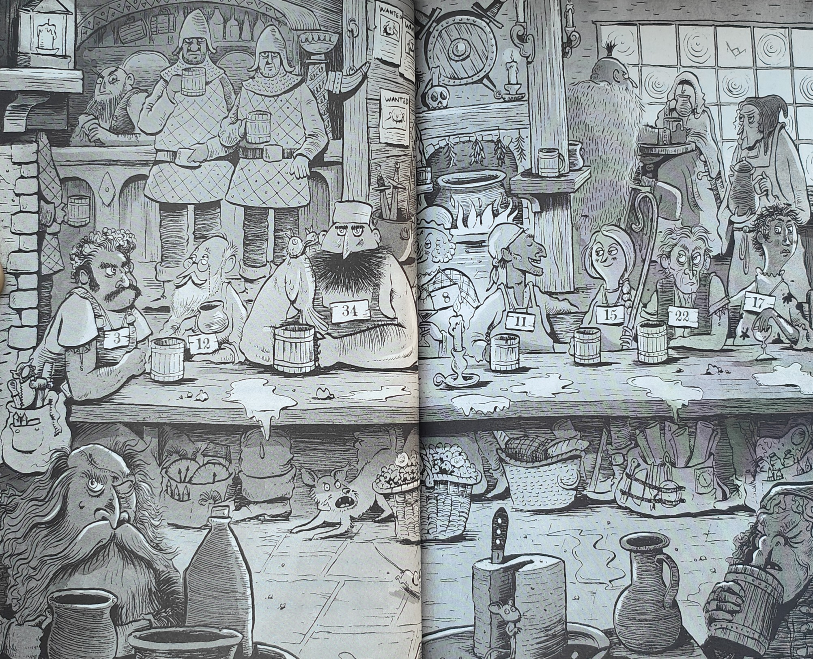
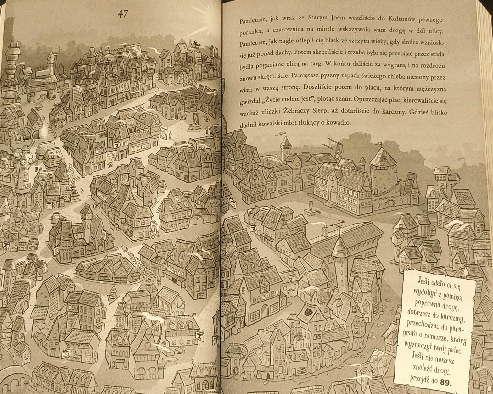
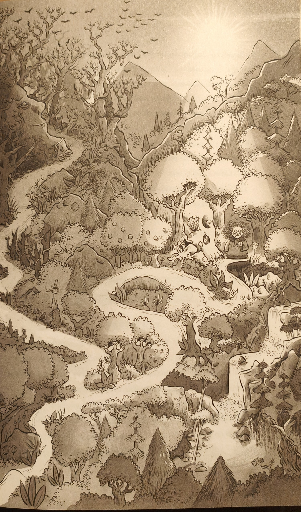
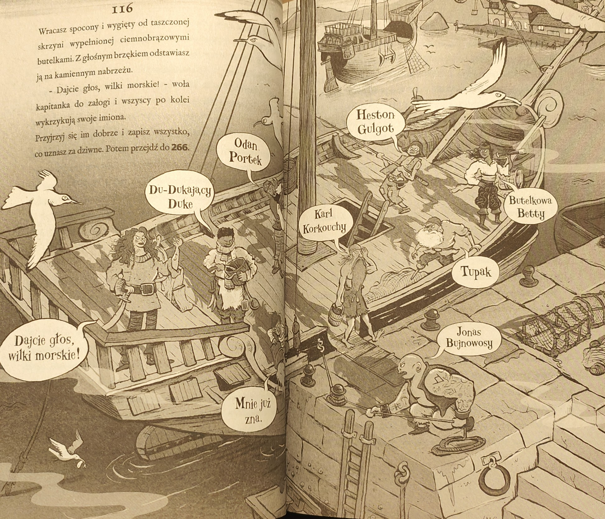
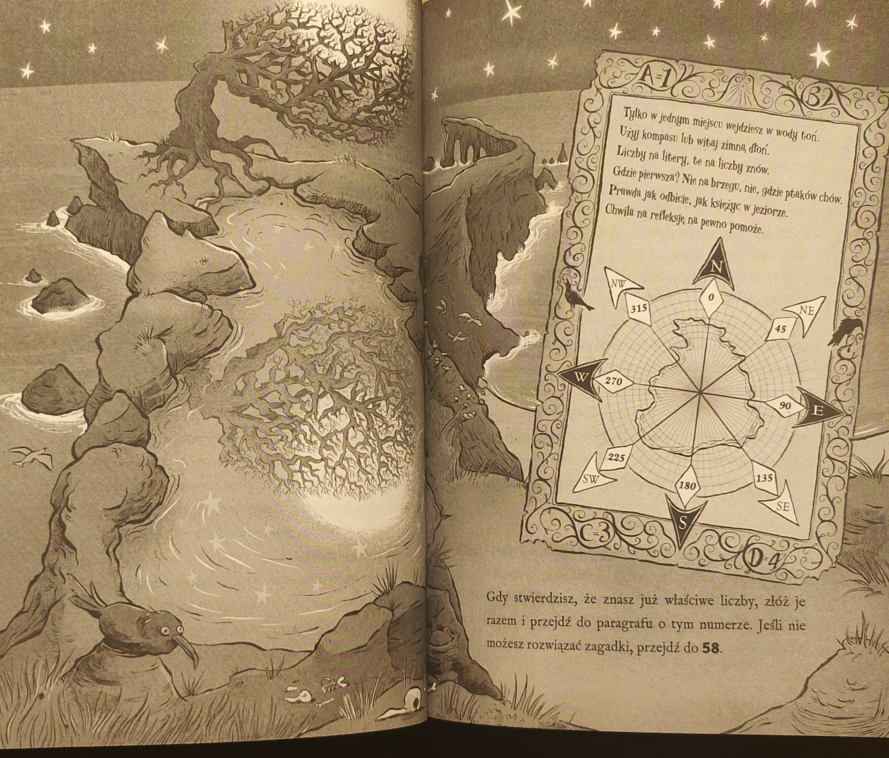

Przez chwilę wydaje ci się, że to wyśniłeś - ten krzyk, który rozerwał noc na pół i wyrwał cię ze snu. Ostre światło zimowego księżyca przebija się przez szczeliny okiennic. Słyszysz zgrzyt metalu, łomotanie do drzwi. Twoja dłoń zaciska się na medalionie, który trzymasz pod poduszką. Przemykasz po drewnianej podłodze do okna. Przed drzwiami stoi pięć postaci w ciemnych płaszczach, z twarzami skrytymi w kapturach. Przywódca grupy wyciąga rękę, by znów załomotać, lecz nagle zastyga. Tak jakby coś wyczuł. Podnosi głowę, by spojrzeć na ciebie. Rzucasz się szybko do tyłu, ale zdążyłeś dostrzec jego twarz. Twarz trupio bladą, o zapadniętych, niewidzących oczach.
- Wybacz późną porę, młody uczniu. Stary przyjaciel prosi o audiencję.
Jego śmiech pełznie po ścianach. Znów słyszysz ten krzyk i zdajesz sobie sprawę, że rozbrzmiewa on gdzieś głęboko w tobie. Jak jakaś zapomniana groza. Kim jest ten człowiek wołający cię po nocy? Czemu zdaje ci się znajomy? Zapisz MEDALION W DZIENNIKU.
Musisz wybrać, czy będziesz walczyć KRZYMIENIEM, czy OSTRZEM CIENIA.
Pierwsza petarda znika w paszczy rzecznego potwora, tworząc kłęby dymu. Po dolinie przetacza się lodowaty śmiech, który wywołuje lawinę małych kamyczków odrywających się od klifów po bokach. Hmm... Może... Gdy strużki wody zaczynają okręcać się wokół twojego ciała, rzucasz pozostałe petardy wysoko w stronę klifu. Wybuchają z głośnym hukiem i oślepiającym błyskiem. Rzeczne monstrum nawet nie zdąża zareagować, gdy ogromny głaz tonie w jego mokrej twarzy. Wodne macki zsuwają się z twojej talii. Odskakujesz dokładnie w momencie, gdy potwór znika pod gradem kamieni.
W ostatniej chwili chwytasz się tylnej klapy pędzącego wozu. Mobilizujesz wszystkie mięśnie, by wspiąć się na stopień, gdy nagle twoja stopa ześlizguje się z drewnianej półki. Wóz ciągnie cię po bruku, trzymasz się już tylko opuszkami palców.
Wzdychasz z ulga, gdy widzisz kołyszący się na wietrze szyld Kociego Korakla - pamięć cię nie zawiodła. Nie zwalniając kroku, podchodzisz do drzwi i delikatnie pukasz szyfrem, który pokazał ci Stary Joe: stuk-puk-puk puk stuk-puk. Cisza. Nikt nie otwiera. Szyld nad twoją głową delikatnie skrzypi. Czerń nieba powoli ustępuje szarości nadchodzącego świtu. Lepiej, żebyś zniknął z ulic, nim wstanie słońce... Pukasz jeszcze raz, tylko nieznacznie głośniej. W pokoju nad wejściem błyska płomień świecy, ktoś schodzi po schodach. Nabierasz powietrza, rygiel przesuwa się, a drzwi stają otworem.
Potykasz się i lecisz do tyłu, czując piekący ból. Trzymasz się za bok, myśląc, że to ukąszenie Pustuli, i wyczuwasz palcami coś małego, twardego i tak zimnego, że aż piecze. Sięgasz do kieszeni płaszcza i wyciągasz niebieski kamień, który znalazłeś w rzece. Lśni tak ostrym blaskiem, że nie możesz na niego patrzeć.
Co to jest!? - krzyczy Pustula, zapominając o swoich manierach.
Nie masz pojęcia, ale kamień parzy ci dłoń. Z wrzaskiem rzucasz znalezisko w gardziel potwora.
Światło dobywające się z kamienia leci coraz niżej i niżej w głąb paszczy. Pustula czeka chwilę, po czym wybucha śmiechem.
- Cóż, ładna błyskotka.
Gdy niemrawo unosisz Krzymień, całym cielskiem Gucifera wstrząsa dreszcz. Z głębi jego trzewi unosi się powiew cuchnącego powietrza, słyszysz nieziemski krzyk, po czym błysk światła spowija wszystko bielą. Jakaś siła wyrzuca cię do tyłu z paszczy demona. Lądujesz z pluskiem w morzu, daleko od niego.
Coś szturcha cię w bok. To kawałek dryfującego drewna. Chwytasz się go i tracisz przytomność.
Opowiadasz jej, jak zmutowane stworzenie zaatakowało cię bez ostrzeżenia, jak broniąc się, zerwałeś łańcuszek z jego szyi. Jak stworzenie przemienilo się w psa i w nietoperza, które uciekły w noc.
Alchemiczka wpatruje się w ciebie intensywnie, zaczynasz niemal wątpić we własne słowa. W końcu odrzuca głowę do tyłu i zaczyna śmiać się tak mocno, że jej ostatni ząb chwieje się w dziąsle.
- Mówisz prawdę, to pewne. Kłamcy są bardziej pewni siebie. - Kuśtyka do stołu na końcu pomieszczenia. W ogromnym bólu uciekł mi z laboratorium, połączenie nie było stabilne. Zwiał, zanim zdążyłam zerwać łańcuszek i na powrót rozdzielić te dwie biedne istoty. Wyświadczyłeś im ogromną przysługę...
Nagle kobieta zamyśla się, grzebie zawzięcie w szufladzie stołu.
- Być może mogę ci się odwdzięczyć. Jeśli kiedyś spotkasz kogoś, kto tak jak ja włada magiczną laską, otwórz to.
Upuszcza na twoją dłoń mały, żółty woreczek wypełniony jakimś proszkiem.
Pocisk z twojego śluzłacza z głośnym plaśnięciem trafia Jonasa Bujnowłosego w sam środek łysej głowy. Unosi gniewnie pięści i robi krok w twoją stronę. Ale nagle zatrzymuje się i pociera oczy. Twarz mu czerwienieje. Odchyla głowę i zawodzi jak dziecko:
- Czemu to zrobiiiiłeeeeeś! - płacze żałośnie.
Odwracasz się, unosząc triumfalnie ręce, ale wtem coś ciepłego i mokrego rozbryzguje się na twoim policzku.
- Nie ciesz się za wcześnie, szprotko!
Karl opuszcza swojego śluzłacza i rechocze ze śmiechu. Cała załoga się śmieje. Nawet Jonas chichocze, choć nie ma pojęcia, co w tym śmiesznego. Gorące łzy zalewają ci policzki.
- Nienawidzę was wszystkich! - krzyczysz wysokim, piszczącym głosem.
Odbiegasz w najdalszy kąt statku i chowasz się za sieciami.
Tunele się krzyżują. Możesz pójść:
- Stój, złodzieju!
Podnosisz wzrok. Strażnik biegnie w twoją stronę. Woźnica ogląda się przez ramię i krzyczy. Jedno smagnięcie wodzy i już wóz wyrywa się spod twoich stóp, wyrzucając cię na drogę. Ledwo zdążasz dobyć Krzymienia, gdy dobiega do ciebie strażnik.
STRAŻNIK
Rundy: 4 Obrażenia: 2
💀💀💀
TY
🔥🔥🔥🔥🔥🔥🔥🔥🔥🔥🔥🔥
Widok strażników przypomina ci o tym, którego ostatnio widziałeś. Powraca to dziwne wrażenie, że lepiej trzymać się poza zasięgiem ich wzroku. Chowasz się w jakiejś bramie. Nigdy wcześniej nie miałeś takich odczuć w stosunku do strażników miejskich. Ale też nigdy wcześniej uzbrojona banda nie goniła cię po ulicach. To zrozumiałe, że jesteś ostrożny. Gapisz się tępo na swoje stopy. Zaalarmowanie strażników to rozsądny wybór... więc skąd to wahanie?
Słońce wschodzi na horyzoncie. Patrzysz na oddalający się Helmsgard promienie odbijają się od wieży Astronoma. Ale twoją uwagę zwracają nagle dziwne odgłosy dochodzące z drogi przed wozem. Śmiech, śpiew, niskie dudnienie i mechaniczne brzęczenie. Droga wiedzie skrajem Posępnego Boru. Kto by przejeżdżał obok tego złowrogiego miejsca w tak dobrym humorze? Wóz wjeżdża w zakręt i odpowiedź sama się pokazuje. To cyrk zjeżdża do miasta! Na przedzie jedzie dyrektor w niebieskim cylindrze wysadzanym gwiazdkami i czerwonej kamizelce, której wielkie złote guziki ledwo wytrzymują napięcie materiału. Widząc wóz, który cię wiezie, podnosi rękę i krzyczy:
Kompania... Stop!
Woźnica pospiesznie zatrzymuje konie, krzycząc:
- Jazda z drogi! Złodzieje! Włóczędzy! Nie widzicie, że nam się spieszy?
Was i tak nikt nie chce w mieście!
Wzrok dyrektora cyrku tężeje.
- Harley, Barley, Cob, chodźcie no, chłopcy!
Wóz dyrektora drży. Drzwi otwierają się z łoskotem i wyłaniają się z nich trzej mężczyźni - najwięksi, jakich w życiu widziałeś.
Chwila, ja tylko żartowałem! - mamrocze woźnica. - Oczywiście, że jesteście mile widziani w mieście! W zasadzie to...
Głos więźnie mu w gardle, gdy trzech cyrkowych olbrzymów pochyla się nad nim.
Odskakujesz do tyłu, a nabijana kolcami metalowa kula przelatuje ci ze świstem przed nosem. Zza jednego z posągów wychodzi strażniczka cała odziana na czarno. Pewnie usłyszała twoje kroki i zaczaiła się na ciebie. Kula zwisa z końca łańcucha, który owinęła wokół nadgarstka.
- Kto zbliża się do Świątyni Cienia?!
Pytasz, czy zawsze najpierw atakuje, a potem zadaje pytania.
- Moje zadanie to pilnowanie Świątyni i nic więcej.
Powoli idzie w twoją stronę, kręcąc nad głową śmiercionośnym łańcuchem.
Rzucasz łuk na bok i w panice próbujesz dobyć Krzymienia, ale mężczyzna jest już przy tobie. W oddali widzisz, jak Madok przestępuje nad swoim przeciwnikiem, jak biegnie w twoją stronę... Krzyczy... ale wszystko staje się nagle ogłuszająco ciche. Wzdychasz delikatnie, padając na ziemię. To koniec twojej przygody.
Napis na drzwiach Płaczącej Wierzby informuje: HANDLARZE PIJĄ ZA PÓŁ CENY. Zdaje się, że towarzystwo w pełni korzysta z tej oferty. Gdy wchodzisz, uderzają cię gwar i ciepło zaparowanej karczmy. Na końcu pomieszczenia w kominku skwierczy ogień, podłogę pokrywają trociny i piwo. Handlarze i handlarki siedzą przy długim stole, a każde z nich ma na szyi zawieszoną karteczkę z numerem swojego straganu, by skorzystać z tańszych napitków. Przy barze stoi grupa strażników miejskich po służbie. Musisz uważać, by nie zwrócić na siebie uwagi jeśli podejdziesz do niewłaściwego kupca, a ten zawoła Madoka, strażnicy na pewno cię zauważą. Musisz więc sam stwierdzić, który z nich jest kartografem.
Przewróć stronę, przyjrzyj się handlarzom, a gdy stwierdzisz, że wiesz, który z nich to Madok, dodaj do siebie numery na karteczkach wszystkich pozostałych handlarzy i przejdź do paragrafu o tym numerze.
I nagle widzisz rysunki na obrzeżach. Wyznaczasz palcem drogę od wschodzącego słońca po prawej do zachodzącego słońca po lewej, potem do góry, do księżyca w pełni, i na dół, do płomienia pod ziemią, Linie krzyżują się nad tym drzewem z dziwnym symbolem na pniu... Zdobywasz 1 punkt UMIEJĘTNOŚCI.
Madok pochyla się i robi ostry wdech.
Wspinasz się po zboczu na skalistą grań. Wiatr wyje, wiruje i przedziera się przez twoje ubranie jak nóż, aż w końcu drętwieją ci stopy i dłonie. W dole widzisz galerę zacumowaną w doku wciętym w szarą ścianę klifu. Nie widzisz nikogo wokół, więc zaczynasz schodzić.
Jeśli jej nie masz, rzuć jedną KOŚCIĄ, a wynik dodaj do wartości swojej WYTRZYMAŁOŚCI.
Może to przez drganie twojej lewej powieki, a może przez instynkt, który Owen wyrobił sobie przez lata warty przy Wschodniej Bramie. Jest coś nieprzekonującego w twoim pustym spojrzeniu. Czujesz dłoń na swojej piersi.
- Witaj, Rowanie. Dawno cię nie widziałem.
Starasz się, by twój głos był tak samo płaski jak jego, ale coś cię ściska w gardle, gdy mówisz mu, że zachorowałeś. Słowa rozbrzmiewają głucho w twych uszach.
- Czy mógłbyś wyjść na światło, Rowanie?
Patrzysz na niego z błaganiem w oczach, ale wyraz twarzy Owena się nie zmienia. Nie masz wyboru. Sięgasz po Krzymień.
WARTOWNIK OWEN
Rundy: 5 Obrażenia: 2
💀💀💀💀💀
TY
🔥🔥🔥🔥🔥🔥🔥🔥🔥🔥🔥🔥
Twój brat osuwa się na podłogę komnaty. Z mroku znów wyłania się jego twarz; wygląda na samotnego i przestraszonego.
Na imię mi Ash. Próbuje się zaśmiać, ale się dławi. Nawet nie spytałeś...
Wtedy jego twarz po raz ostatni spowija cień i twój brat umiera.
Opowiadasz jej o wszystkim, co ci się przydarzyło, odkąd niespodziewanie obudzono cię w środku nocy. Chochliczka siedzi ze skrzyżowanymi nogami i z podbródkiem wspartym na dłoniach a wyściełanej mchem ziemi. Gdy na kończysz swoją opowieść, siedzi tak jeszcze długo w milczeniu. Nad wami skrzeczy wrona. Odchrząkujesz, wyrywając chochliczkę z zamyślenia.
- Powiedz mi, złociutki... Zanim porywacz zginął, czy widziałeś może jego cień?
Pytasz, co ma na myśli.
- A nic, nic. Jak ktoś ma uszy bliżej ziemi, to słyszy czasem różne głupstwa, plotki... - uśmiecha się nagle i podrywa na nogi. - Tak przy okazji, nazywam się Pokrzywka. A ty się zgubiłeś, tak? Mogę ci pokazać, jak wyjść z boru. Jedyna inna opcja to...
Zawiesza głos. Błagasz ją, by dokończyła zdanie.
- Mógłbyś też poszukać Starej Pani Boru. Nie bardzo lubi obcych, ale słyszy i wie wszystko, o tym, co się dzieje w tych stronach. Jeśli ktoś miałby nadać sens twojej historii, to właśnie ona. Ale czy będzie chciała....
Pokrzywka wyszczerza zęby i wzrusza ramionami.
- Myliłem się. Twoja matka nigdy nie powierzyłaby tajemnej lokalizacji Płomienia takiemu głupcowi jak ty.
Jego rozczarowanie przeradza się w gniew.
- Wracaj do Świątyni, uczniu stolarza!
Budzisz się przywiązany do Tarczy. Symbole rozświetlają się, pierścienie zaczynają obracać. Coś rozbłyska na wskroś dysku, po czym zapada ciemność. Na tym kończy się twoja przygoda.
Twoje knykcie bieleją, gdy zaciskasz pięści, wbijając sobie paznokcie w dłonie, ale nie ruszasz się z miejsca. Stary Joe chciał cię wydać. Twój własny ojciec, najbardziej niezłomna i niezawodna osoba, jaką znasz. Nie ma więc co liczyć na pomoc w mieście, gdzie wszystko chodzi jak w zegarku. Jedyna nadzieja w niewychylaniu się, póki nie opracujesz planu.
Karczmarz lekko kiwa głową i puszcza ci oko. W tym drobnym geście jest więcej siły niż w najmocniejszym uderzeniu. Patrzysz, jak wóz przejeżdża obok ciebie, jak jedzie dalej w dół ulicy. W oddali Czarna Wieża góruje nad Kołtunami. Nie ma na niej ani wieżyczek, ani parapetów. Od jej ścian nie odbija się światło. Wieża jest jak wrota mroku. Włos ci się jeży na karku, gdy się odwracasz.
Tłum zgromadził się dookoła, by popatrzeć, jak bijesz się z łotrzykiem. Jest nadspodziewanie silny i musisz walnąć jego głową o bruk, by w końcu przestał się wyrywać. Zabierasz bransoletę, a on siada, z grymasem bólu obmacując skroń. Gdy zbierasz się do dalszej drogi, grupa dzieciaków nabija się z łotrzyka.
Tam to musi być właściwe pole! Skaczesz na nie, a bestia szamocze się, drapie posadzkę, próbując poderwać swój wielki ciężar, nim podłoga zniknie pod nią... Ale jest już za późno. Posągi Wartowników unoszą swoje kule, a z każdej z nich w ośmiu kierunkach wystrzeliwują błyskawice. Słyszysz rozpaczliwy ryk smoka, gdy z każdej strony mijają cię błyski, po czym wszystko zamiera. Jesteś bezpieczny.
Zdobywasz 1 punkt UMIEJĘTNOŚCI.
Dym unosi się z zaciśniętej paszczy smoka, a ty uważnie wypatrujesz nawet najmniejszego ruchu. Nie zapominasz też o głosie, który słyszałeś wcześniej, ale spod zwęglonych skrzydeł bestii nie wychyla się żaden jeździec.
W końcu rozglądasz się dookoła. Przez witrażowe okna sączy się blade światło, rozpraszając się na posadzce. Za szybami powoli przepływa czarny kształt ryby. Na tylnej ścianie komnaty dostrzegasz kamienne drzwi; na ich powierzchni migocze niewyraźny zarys płomienia. Ostrożnie stawiasz stopę na kwadracie obok, ale kule Wartowników pozostają na miejscu przyciśnięte do ich piersi. Nie budzą się w obliczu Strażnika.
Przechodzisz na drugą stronę komnaty i z całych sił pchasz drzwi. Zarys płomienia rozżarza się i przypominasz sobie, co ci powiedziano - tylko Strażnik może otworzyć wrota tej komnaty. Kamienna płyta zaczyna się podnosić. Kucasz i zerkasz do środka, ale w tym samym momencie coś ciemnego przepełza obok twojej stopy. Coś ciemniejszego od mroku korytarza za drzwiami. Rozbłyska fioletowe światło, po czym znajomy głos szepcze:
- Wejdź, Rowanie. Nie bój się.
Z trudem łapiąc oddech, rozglądasz się dookoła. Wóz już zniknął, wokół nikogo nie ma, ale nie minie dużo czasu, nim woźnica zaalarmuje władze. Zaciągasz ciało strażnika w boczną uliczkę i ruszasz w stronę starych doków.
Twój brat osuwa się na podłogę komnaty. Z mroku znów wyłania się jego twarz; wygląda na samotnego i przestraszonego.
Na imię mi Ash. Próbuje się zaśmiać, ale się dławi. Nawet nie spytałeś...
Wtedy jego twarz po raz ostatni spowija cień.
Spuszczasz głowę i już masz się odwrócić, gdy widzisz, że cień podnosi się z ziemi. Za późno zdajesz sobie sprawę z błędu - zabiłeś tylko ciało!
Cofając się o krok, w panice szukasz OSTRZA CIENIA.
CIEŃ ASHA
Rundy: 4 Obrażenia: 4
💀💀
TY
🔥🔥🔥🔥🔥🔥🔥🔥🔥🔥🔥🔥
Pamiętaj, że możesz korzystać tylko z premii do obrony pochodzącej z KOLCZUGI. Cień Asha nie może korzystać z laski.
„Ręka", której się trzymasz, ugina się pod twoim ciężarem, aż w końcu jesteś twarzą w twarz z pozbawioną życia przynętą. Ostatkiem sił sięgasz jedną ręką do torby i wyciągasz z niej linę z hakiem. Masz tylko jedną szansę. Zakręcasz hakiem nad głową i puszczasz. Lina leci w stronę drzew, przynęta wymyka się z twojego uścisku, a ty modlisz się w duchu, by hak zaczepił o cokolwiek, co będzie w stanie wytrzymać twój ciężar. Lina zatrzymuje się, chwytasz się jej mocno...
Rzuć jedną KOŚCIĄ, a wynik rzutu dodaj do wartości swojej ZRĘCZNOŚCI.
Tunele się krzyżują. Możesz pójść:
-Chrońcie dzieciakal - wrzeszczy dyrektor cyrku, gdy pół-Harlan wyskaknje zza wozu.
Jeden z cyrkowych siłaczy łapie go za kostki i ciska nim w stronę nadciągającej odsieczy, ale ich blady przywódca wyciąga dłoń i jakimś cudem odrzuca bezwładnego pół-Harlana na bok, w ogóle go nie dotykając. Pói-Harlan ląduje na małym wzniesieniu na skraju lasu, a jego broń ze szczękiem upada obok twych stóp. Podczas gdy obie strony napierają na siebie, akrobatka z gracją przeskakuje nad wozem i przecina twoje więzy.
- Biegnij do lasu, chłopcze! - rzuca zduszonym szeptem. - Szybkol
Chwytasz za broń, biegniesz zgięty w pół i już, już prawie docierasz do linii drzew, gdy ktoś staje na twojej drodze. To twój porywacz! Krzyczysz, by zlazł ci z drogi - jest przecież nieuzbrojony.
- Nie mogę dać ci uciec - odpowiada cicho i robi krok w twoją stronę.
Nie masz wyjścia - musisz z nim walczyć.
Zapisz w DZIENNIKU broń pół-Harlana - KRZYMIEŃ.
PÓŁ-HARLAN
Rundy: 3 Obrażenia: 1
💀💀
TY
🔥🔥🔥🔥🔥🔥🔥🔥🔥🔥🔥🔥
Wyciągasz sieć z torby i rzucasz ją w kierunku sześciu bagiennych goblinów.
Wykreśl SIEĆ Z DZIENNIKA, a następnie rzuć jedną KOŚCIĄ. Wynik rzutu powie ci, ile goblinów udało ci się złapać w sieć.
Chochliczka kręci głową i wzdycha, patrząc, jak walczysz z więzami.
Tego na pewno bym nie zrobiła mówi bardziej do siebie niż do kogokolwiek innego. - Nawet gdybym była tobą.
Korzenie ponownie zaciskają się i przyciągają cię bliżej pnia, bliżej okrągłych sęków porastających korę jak czyraki. Widzisz nagle w każdym sęku twarz - drewnianą rzeźbę rozpaczy. W przerażeniu otwierasz usta, ale wnet twój krzyk zostaje stłumiony kneblem z korzenia. Zaraz i ty staniesz się kolejnym sękiem w korze Starego Drzewacza.
Idziesz w dół tunelu i wyglądasz za zakręt. Widzisz dwóch mężczyzn, z których jeden jest odwrócony do ciebie plecami, a drugi stoi na baczność. Rozpłaszczony przywierasz do ściany tunelu. Te długie, cienkie, białe włosy spływające na płaszcz... Czyżby to był on? Wstrzymujesz oddech, by usłyszeć, co mówi.
- A Tarcza? Jest już gotowa?
- Tak jest, lordzie Creevalu.
- W takim razie przyprowadź pierwszego więźnia. Wkrótce zaczniemy.
Strażnik stuka obcasami i znika w bocznym korytarzu.
Creeval pochyla głowę, po czym gwałtownie odwraca się i idzie w twoim kierunku. Na szczęście jest pogrążony w myślach, a ty kryjesz się w cieniu.
Zdobywasz 1 punkt UMIEJĘTNOŚCI.
Twój umysł pracuje w przyspieszonym tempie. Mówisz istocie, że nieszczególnie interesujesz się samą Samotną Wyspą, ale słyszałeś, że wielki świszczeń plamisty wybrał ją sobie jako miejsce gniazdowania.
- Zapewne wie pan dodajesz że wielki świszczeń plamisty zakłada gniazdo tylko raz na pokolenie.
Doprawdy? Nie, nie wiedziałem. Zaiste, ciekawostki ze świata na powierzchni są fascynujące. Nasi klienci zazwyczaj są mało skorzy do rozmów, a zresztą Gucifer mniej się interesuje tymi sprawami. Al To mi przypomina...
Pustula wzdycha.
- Naprawdę, strasznie niefortunna sytuacja. Mamy za zadanie pochwycić Rowana z Helmsgardu, lecz póki co mieliśmy jedynie okazję świadczyć nasze usługi kupcowi z Dunbaru, dmuchaczowi szkła z Herikassy i młodej kobiecie szukającej krańca świata.
Brwi Creevala unoszą się, gdy przesuwasz swojego jednorożca. Z punktu widzenia gry jest to samobójczy ruch.
- Mam nadzieję, że podjąłeś już decyzję, Rowanie.
Sięga do przodu i nagle dzieje się coś dziwnego. Twoje figurki zaczynają drgać. Z twojego Strażnika wydobywa się płomień, który zakreśla utworzony przez ciebie kształt. To ten sam symbol, który widziałeś na żaglu statku w Zamierzchłych opowieściach, w komnacie alchemiczki, na ramieniu Jonasa Bujnowłosego i w wielu innych miejscach, które odwiedziłeś w trakcie swojej podróży.
Creeval w panice odsuwa się od stołu.
- Coś ty zrobił?!-syczy.
Gęsta mgła zasłania ci oczy, pokój powoli znika, ale widzisz jeszcze cienie przesuwające się pod oknami. Gdzieś jakby z oddali dochodzi cię krzyk Creevala:
-Aaaa, cofnijcie się! Pracujecie dla mnie! Proszę, niece...!
Jego krzyk zamiera, a z mgły wyłania się kobieta. Ma krótkie, ciemne włosy i jest odziana w żółtą szatę.
- Weź to, Rowanie.
Patrzysz w dół. W dłoniach trzymasz sztylet Creevala.
- Odebrał mi go. Teraz należy do Ciebie.
Kobieta zaczyna znikać, coraz słabiej ją słyszysz.
- Jeszcze chwila i wszystko byłoby stracone.
Słowa więzną jej w gardle i nagle wiesz już, kim jest.
- Czekaj! - krzyczysz. - Nie odchodź!
- Musisz wrócić do domu, Rowanie. Ale pamiętaj... - jej głos jest już tylko szeptem; szeptem matki w uchu dziecka - ...wybrałam ciebie.
Zapisz OSTRZE CIENIA W DZIENNIKU i dodaj notatkę, że pozwala ci ono walczyć z cienistymi upiorami, ale nie zwiększa efektu udanego ataku przeciwko nim. We wszystkich pozostałych walkach używasz KRZYMIENIA.
Za plecami wciąż słyszysz wołania o pomoc, ale nie masz czasu do stracenia.
Otacza cię sześciu mężczyzn. Trzech z nich ubranych jest tak jak zakapturzone postaci, które już spotkałeś, pozostali to strażnicy miejscy. A więc działają wspólnie! Jeden ze strażników zaczyna chichotać, sięga po broń... Raptem jego śmiech zamiera. Patrzy w dół - to strzała uwięzła mu w gardle.
- Padnij! - krzyczy Madok.
Kolejny mężczyzna upada na bruk, nim reszta orientuje się w sytuacji. Jeden z zakapturzonych obcych ciągnie cię w stronę warsztatu.
- Zabić łucznika! - krzyczy.
Zostajesz wciągnięty do środka, ale desperacja dodaje ci sił. Wykręcasz się z jego uchwytu i sięgasz po Krzymień.
ZAKAPTURZONA POSTAĆ
Rundy: 6 Obrażenia: 2
💀💀💀💀💀
TY
🔥🔥🔥🔥🔥🔥🔥🔥🔥🔥🔥🔥
Creeval wzdycha.
Za każdą ze skrzydlatych bestii rzuć jedną KOŚCIĄ.
Jeśli wypadnie 2, 4 albo 6, Sowil obraca się i chwyta paszczą za skrzydło bestii. Targa nią jak lalką, po czym wypuszcza, pozwalając jej opaść na ziemię ze skrzekiem.
Jeśli wypadnie 1, 3 albo 5, bestia nurkuje pod szczękami Sowila i zatapia swój długi, zakrzywiony dziób w jego gardle.
Oznajmiasz Madokowi, że musisz wrócić do warsztatu.
Ta wiadomość to tylko część układanki mówisz. Potrzebujemy jeszcze książki... Jestem pewien, że o to jej chodzi.
- Książki z warsztatu?
Kiwasz głową.
- No to musimy się pospieszyć. Mogą już obserwować to miejsce.
Razem idziecie przez Helmsgard. Migotliwe światło lamp odbija się na bruku, ale przestało już padać.
- Jak sobie radzisz ze strzelaniem z łuku? - pyta Madok.
Odpowiadasz, że jakieś podstawy znasz.
No to mamy wybór. Jeśli warsztat jest obstawiony, trzeba będzie ich stamtąd wywieść. Jeden z nas będzie przynętą, a drugi łucznikiem.
W milczeniu skradacie się ulicą prowadzącą do twojego domu. Kucacie za jakąś beczką. Widać stąd, jak mocno oberwał warsztat - drzwi zwisają krzywo z zawiasów, ktoś wybił szybę w oknie. Madok rozchyla poły płaszcza i wyciąga spod niego łuk i kołczan strzał.
- Musimy założyć, że nie wiedzieli, czego szukają. Słuchaj, jeśli tu są, na pewno czekają wewnątrz warsztatu. Przynęta musi wyciągnąć ich na zewnątrz, żeby łucznik mógł ich wybić.
Mężczyzna walczy w milczeniu. Emocje pokazują się na jego twarzy dopiero wtedy, gdy dosięga go Krzymień. Wzdycha i zdaje się odprężać, padając na ziemię. Wygląda to niemal jak ulga. Odwracasz się, a chłopak gapi się na ciebie. Jego przeciwnik też nie żyje.
- Nie mówiłem, żebyś tędy nie lazł? Trzeba było cię zostawić.
Otwierasz szerzej oczy, gdy go rozpoznajesz.
- Casper?
- Skąd ty... Rowan?
Otwierasz usta i już masz coś mówić, gdy ci przerywa.
- Czekaj. Najpierw stąd chodźmy, potem pogadamy.
Prowadzi cię w dół do doków i na duży statek rybacki.
Przez zaciśnięte szczęki Sowil wydaje z siebie cichy jęk. Uderzenia jego skrzydeł słabną. Odrażająca bestia skrzeczy triumfalnie, kołując nad wami. - Wytrzymaj, przyjacielu - błagasz, głaszcząc jego miękkie futro i tuląc jego szyję. Ale złote oczy obracają się, przez dłuższą chwilę patrzą smutno na ciebie, po czym się zamykają.
Razem spadacie w stronę ziemi.
Po wąskiej alejce odbija się echem łoskot biegnących butów. Ścigają cię już cztery zakapturzone postaci. Księżyc skrył się za dachami miasta, ale znasz te zaułki jak własną kieszeń. Na końcu alejki przeskakujesz przez ogrodzenie i lądujesz na małym podwórku. Wieprz chrapie na posłaniu z siana. Nasuwa ci to pewien pomysł.
Trzymając się zacienionej strony ulicy, idziesz w stronę chaty Madoka na skraju miasta. Ulica wygląda schludniej, niż ją pamiętasz. Wymieniono popękany bruk, a nieczynny, pokryty napisami i bazgrołami młyn został zburzony. W jego miejscu stoi pomnik. Stajesz jak wryty. Lester Griblin? To on teraz tu rządzi? Dłuto odjęło mu kilka kilogramów, ale to na pewno on. Jego twarz patrzy w przyszłość, szczękę ma zaciśniętą, a na cokole widnieją słowa: Bez cienia wątpliwości.
Słyszysz zbliżające się kroki, więc ruszasz dalej w swoją stronę. Niedługo potem dochodzisz do skrzyżowania.
Nagle uwagę wszystkich zgromadzonych przykuwa tętent końskich kopyt. Pozostali porywacze galopują w waszym kierunku. Dobywają broni! Na czele upiornego pościgu jedzie blady przywódca. Pęd zerwał mu kaptur, odsłaniając długie pasma białych, cienkich włosów opadające na jego skronie.
Załoga podbiega do Caspra, by pomóc mu zejść z Tarczy.
- Ostrożnie! - woła Jonas Bujnowłosy. - Żebyś se teraz karku nie złamał!
Klepie go mocno w plecy, prawie go przewracając.
Spoko, zrobisz to za mnie mamrocze Casper, a kapitanka Gicz wybucha śmiechem.
Creeval odzywa się cichym, ale wypełniającym całą jaskinię głosem:
- Moi strażnicy wyprowadzą was na powierzchnię. Wasz statek kotwiczy w pobliskiej zatoczce.
Odwracasz prędko głowę, patrząc na niego zaskoczony.
- Radzę ci zapomnieć o swoim przyjacielu - zwraca się teraz prosto do Caspra. - Nie możesz mu pomóc. Słońce wisi już nisko na horyzoncie. Jeśli nie odpłyniecie przed jego zachodem, Rowanowi przypadnie twój niedoszły los. A potem wszyscy go podzielicie.
Casper spogląda w górę, ale kapitanka Gicz kładzie mu dłoń na ramieniu.
- Uda ci się! - zaciętym, zdławionym głosem woła do ciebie Casper. - Zawsze nam się udawało!
Myślisz sobie, że cała ta sytuacja to nieporozumienie. Podchodzisz do strażnika, by oczyścić swoje imię. Patrzy na ciebie zdziwionymi oczyma, gdy opowiadasz mu, co się stało.
- Lepiej zajrzyj na posterunek - mówi. - Żeby wszystko wyjaśnić.
Czy to był cień uśmiechu na jego twarzy?
Pamiętasz, jak wraz ze Starym Joem weszliście do Kołtunów pewnego poranka, a czarownica na miotle wskazywała wam drogę w dół ulicy. Pamiętasz, jak nagle oślepił cię blask ze szczytu wieży, gdy słońce wzniosło się już ponad dachy. Potem skręciliście i trzeba było się przebijać przez stada bydła poganiane ulicą na targ. W końcu daliście za wygraną i na rozdroźn znowu skręciliście. Pamiętasz pyszny zapach świeżego chleba niesiony przez wiatr w waszą stronę. Doszliście potem do placu, na którym mężczyzna gwizdał „Życie cudem jest", plotąc sznur. Opuszczając plac, kierowaliście się wzdłuż uliczki Żebraczy Sierp, aż dotarliście do karczmy. Gdzieś blisko dudnił kowalski młot tłukący o kowadło.
Jeśli udało ci się wydobyć z pamięci poprawną droge, dotrzesz do karczmy. przechodząc do para- graft o numerze, który wyznaczył twój palec.
Nie masz szans na ucieczkę - widziałeś, jak szybko poruszają się te zjawy. Nagle w myśli błyska ci lusterko, które dostałeś od Madoka. Nie wiesz, jak może ci ono pomóc, ale cień już w połowie przecisnął się przez otwór, a nie masz innych pomysłów. Unosisz lusterko i dzieje się coś dziwnego. Zwierciadło zdaje się w jakiś sposób wstrzymywać upiora. Czujesz lodowaty chłód bijący od cienia, widzisz, jak szkło pokrywa się szronem. Nim tafla lustra pęknie, wpychasz lustrem cień z powrotem przez otwór i zatrza- skujesz właz.
Opierasz się chwilę o ścianę, odzyskując oddech, po czym wychodzisz z komnaty i ruszasz z powrotem do rozwidlenia tuneli.
Pierścień rozjarza się jeszcze bardziej, po czym rozsypuje się w popiół na twoim palcu. Uratował cię po raz ostatni.
Z przerażeniem patrzysz, jak twój porywacz atakuje. Twarz akrobatki zastyga w zdziwieniu, gdy pada martwa na ziemię. Próbujesz wygramolić się z wozu, ale zaplątujesz się w jej bezwładne ręce. Kolejne pchnięcie pół- Harlana przekłuwa twój bark. W końcu udaje ci się zeskoczyć na ziemię. Tunika szybko czerwienieje od krwi. Wzywasz pomocy, wołasz, że cię porwali!
- Narzędzia, bo jest stolarzem - mówisz cicho. - Naszyjnik z kotwicą, bo zawsze trzyma go pod poduszką. I skrzypce, bo to instrument, na którym gra.
Pozostałe karty opadają na dno jeziorka, gdy kobieta unosi dłoń nad wodą. Trzy karty, które wybrałeś, zaczynają się powoli poruszać. Kołują wciąż szybciej i szybciej, aż są już tylko plamą na obrzeżach wiru, który znika w ciemności.
- Dom jest po drugiej stronie - mówi kobieta. - Brawo, Rowanie.
Zdobywasz 1 punkt UMIEJĘTNOŚCI.
Uśmiecha się do ciebie po raz pierwszy, odkąd ją widzisz.
- Kim jesteś? - pytasz znowu.
Oddech więźnie jej w gardle.
- Jestem twoją mamą.
Nie możesz się ruszyć.
- No i co ja mam na to powiedzieć?! Nigdy cię nie znałem! - wykrzykujesz jej w twarz.
Jej oczy lśnią od łez.
- Dlatego właśnie wir zabierze cię do Helmsgardu.
Bierze głęboki wdech.
- Mogę ci pomóc tylko ten jeden raz. Została nam tylko chwilka. Cienie, Rowanie. Widziałeś je. Być może już wiesz, skąd się biorą. Ale nie wiesz, czym są. Słuchaj. Jest pewien stary król o białych oczach i białych włosach.
- Creeval? - pytasz, zmuszając się do skupienia. - Próbował mnie porwać.
- Wykonywał rozkazy. Zabrałby cię do swojej fortecy i rozciąłby na dwie części. Odciąłby twoje ciało od cienia, byś nie był już zagrożeniem.
Jej słowa rozbrzmiewają, nakładając się na siebie, gdy ogród wokół ciebie zaczyna znikać.
- Twój cień jest tym, czyni cię tobą, Rowanie. Każda wolna myśl, każda iskra inspiracji, każda chwila gniewu i buntu. Wszystko to pochodzi od twojego cienia. Bez niego twoje ciało jest jedynie niewolnikiem. Na pewno ich widziałeś. Ludzi bez cienia, którzy żyją, ale są martwi w środku. Marionetki Żniwiarza Cieni.
Dukający Duke gotuje gulasz rybny z dodatkiem rumu i przypraw.
- T-t-t-to cię r-r-r-rozgrzeje - mówi, podając ci wypełnioną po brzegi michę.
Owszem, posiłek cię rozgrzewa, i to jeszcze jak! Casper aż pokłada się ze śmiechu, kiedy z oczu zaczynają ci się lać strumienie łez. Dodaj 4 punkty do swojego ŻYCIA.
Po obiedzie przyjaciel zabiera cię na dziób statku i wskazuje szary kształt na horyzoncie.
To Samotna Wyspa - mówi. Powinniśmy ją minąć przed zachodem słońca.
Opiera się o nadburcie.
- Słuchaj, gadałem z kapitanką i idę z tobą.
Odwracasz się szybko do niego.
- A co z twoją wypłatą?
Trochę sobie odłożyłem. A wygląda na to, że to, co mówiłeś, to poważna sprawa. Sam też dość już widziałem... Na co mi pieniądze, jeśli nie mam do czego wracać? To chyba tyle.
Podążasz za jego wzrokiem w kierunku poszarpanego odłamka skalnego.
- Okej - mówisz. - Dzięki.
Casper uśmiecha się i klepie cię po ramieniu.
Dobrze! No to postanowione! Już się bałem, że będziesz mi tu odgrywał samotnego bohatera.
Przyjmuje heroiczną pozę, a ty śmiejesz się, aż z rufy dociera do was krzyk.
Zręcznym ruchem przeciwnik wytrąca ci z ręki toporek, który z łoskotem sunie po bruku. Wszelka nadzieja przepadła. Przypiera cię bezbronnego do ściany. Jego towarzysze zjawiają się szybko. Związują cię, kneblują i włoką przez milczące ulice nie wiadomo dokąd.
Wycelowałeś idealnie. Goblin wydaje z siebie pisk, po czym pada twarzą w muliste wody sadzawki.
Wykreśl 1 STRZAŁĘ Z DZIENNIKA. Zdobywasz 1 punkt UMIEJĘTNOŚCI.
Gdy docierasz na targ, dostrzegasz, że wielu kupców zwinęło już swoje stragany, a ci, którzy zostali, właśnie się pakują. Piekarz rzuca ci niesprze- dany placek z mięsem, który miał już trafić do chlewu. Dodaj 2 punkty do swojego ŻYCIA. Ścierając sos z podbródka, dostrzegasz krzepkiego strażnika miejskiego rozpytującego przechodniów. Pada twoje imię. Widziano cię w okolicy, strażnicy chcą cię przesłuchać.
Rzucasz się w kierunku sznurka na pranie. Sam jesteś zdziwiony, z jaką gracją udaje ci się go złapać i zjechać po nim na bruk. Rozglądasz się z uśmiechem - może ktoś zobaczył twoją brawurową ucieczkę? Owszem. Patrzy na ciebie zakapturzona postać na końcu alejki! Ruszasz sprintem w przeciwnym kierunku, a ponad dachami znów słyszysz ten głos - nikły, ale wyraźnie szyderczy:
Słyszysz pisk, po czym czujesz ostry ból w łydce - ugryzł cię szczur! Tracisz 1 punkt ŻYCIA. Potem tunele się krzyżują. Możesz pójść:
Walisz pięściami w drzewo. Stoi jak posąg, ciemne na tle księżycowej poświaty. Może trzeba iść wzdłuż jego odbicia...? Wiersz mówił coś o odbiciu...
Gdy wchodzisz do zimnego jeziora, z twojej piersi wyrywa się zduszony krzyk. Po chwili uświadamiasz sobie, że to nie woda zaciska na twoim ciele lodowate macki. W każdym razie nie tylko ona. Para długich, trupiobladych ramion oplata twoje ciało, ściska jak na powitanie, wciąga w toń.
Tafla wody zamyka się nad twoją głową, tłumiąc desperacki krzyk. Jezioro zachowało swój sekret. To koniec twojej przygody.
Nerwowo podajesz jej butelkę. Wyrywa ci ją z ręki, zanurza w niej palec, po czym przywodzi wyłowioną kroplę do ust. Światło latarni sprawia, że jej oczy kryją się w cieniu. Alchemiczka odwraca się gwałtownie i kuśtyka po schodach w górę. Pomimo jej wieku ciężko ci za nią nadążyć.
- Pomyliłem coś? - pytasz, gdy wchodzicie z powrotem do laboratorium.
- Nie! - odpowiada, nie odwracając się.
W miejscu, gdzie przyrzeczna ścieżka łączy się z drogą, rośnie morwa. Zatrzymujesz się, by zebrać słodkie, czarne owoce. Dodaj 3 punkty do swojego ŻYCIA.
Nurt rzeki powoli niesie szmacianą laleczkę; patrząc za nią, zauważasz grupę ludzi pędzących ścieżką w twoją stronę. Kolejna grupa wyłania się zza zakrętu drogi. Ocierasz z podbródka owocowy sok, odwracasz się i ruszasz biegiem. Znaleźli cię!
Wejście do ścieków jest tuż przed tobą, w przejściu pomiędzy dwoma magazynami. Idziesz w dół, brodzisz przez gęsty szlam i podgnile kawalki drewna. Zza pleców do twoich uszu dociera coraz głośniejszy stukot butów o szczeble drabiny - odbija się echem między ścianami. Na drugim końcu przejścia kolejna drabina prowadzi w górę, do żelaznej kraty. Wyszarpujen ją, rzucasz na bok, gdzie ląduje z głuchym pluskiem. Ale nawet tego nie słyszysz. Nie możesz się ruszyć. Przed tobą, w wejściu do ścieków, leży latka alchemiczki... złamana wpół. Dopadli ją.
Woła do ciebie znajomy głos:
- Już starczy, Rowanie. Może zejdziesz na dót?
W tonie Starego Joego pobrzmiewa błagalna nuta. Odnajdujesz jego twarz w tłumie. Jest blada, wilgotna, o oczach pustych jak w koszmarze.
Cała energia odpływa z twojego ciała. Mógłbyś się wczołgać do ścieków, może ukryć się w ich labiryncie na jakiś czas... ale jaki w tym sens? Nie masz już gdzie szukać pomocy.
Joe przepycha się przez tłum, chwyta szczeble drabiny. Słyszysz jego ciężkie, szarpane dyszenie. Ale do twoich uszu dociera coś jeszcze.
Z czeluści kanału dobywa się warczenie, staje się coraz głośniejsze... Odwracasz się - z ciemności patrzy na ciebie para złotych oczu. Coś uderza cię w klatkę piersiową i niebo wywraca się do góry nogami. Joe już jest blisko, już wyciąga rękę, ale ogromne szczęki zaciskają się na twoim nadgarstku i wielki, czarny, skrzydlaty wilk unosi cię w górę. To Sowill Z warknięciem zarzuca cię na swój grzbiet, chowasz twarz w jego miękkim futrze.
Gdy podnosisz głowę, lecicie ponad dachami Helmsgardu. Po ob stronach wilczego wybawiciela to wznoszą się, to opadają olbrzymie skrzydła. Wokół szyi Sowila przewiązany jest czerwony łańcuszek, za który zatknięto zwój. Rozwijasz pergamin, trzymając go mocno w świszczących podmuchach wiatru. Wewnątrz widzisz pospiesznie nakreślone zdania.
Z kolejnym dzikim piskiem bagienny goblin znika w wysokiej trawie, a jego gniewne złorzeczenie niknie w oddali.
Twoja strzała chybia celu. Tracisz 1 punkt UMIEJĘTNOŚCI.
Na szczęście uderzyła w żelazne kraty celi i nie raniła nikogo innego.
Lodowate palce cienia Asha zagłębiają się w twojej piersi. Z sykiem zadowolenia cień odnajduje twoje serce i przerywa jego bicie.
Casper zabiera cię na pokład, gdzie spotykasz wysoką, barczystą kobietę z burzą rudych loków i tatuażem węża morskiego pnącego się po jej szyi. Ma na sobie sweter, który wygląda, jakby był utkany z kolców jeżowca. To kapitanka Gicz.
Pochyla się i mruży oczy, wpatrując się w ciebie. Jej oddech ma woń rumu i tytoniu.
- Możemy cię wziąć na Samotną Wyspę - mówi. - Ale czego ty szukasz na tej zapomnianej skale?
Sięgasz po Krzymień. Goblin rzuca jedno spojrzenie czym znika w w oddali. W twoją stronę, po wysokiej trawie. Jego gniewne złorzeczenie niknie
Twój porywacz pada na ziemię z westchnieniem.
- Tak będzie lepiej - szepcze.
Cofasz się, gdy wkłada rękę pod tunikę, ale zza pazuchy wyciąga jedynie niewielki biały kwiat.
- Proszę, weź to. Rośnie tylko w pobliżu mojego miasteczka, daleko stad. Noś go ze sobą, a gdybyś spotkał kiedyś pół-Harlana, daj mu go.
- Myślałem, że to ty jesteś pół-Harlanem.
Uśmiecha się ze smutkiem:
- Harlan miał dwie połowy.
Jego powieki opadają. Bierzesz biały kwiat i biegniesz do lasu.
Pędzisz do stajni. Brama jest stara, przeżarta przez robactwo. Deski głośno jęczą pod twoim ciężarem. Krzywisz się na ten odgłos, ale gramolisz się na drugą stronę bramy. Czy umknąłeś na czas? Słyszysz kroki na ulicy. Kroki są coraz głośniejsze. Umykasz w najdalszą część podwórza i kucasz w pustym boksie. Ale tylko opóźniasz to, co nieuniknione. Stara brama ponownie jęczy, gdy jeden ze ścigających wspina się po niej i odryglowuje ją od środka. Cztery ciemne, zakapturzone postaci majaczą na tle nocnego nieba.
- Czego chcecie?! - krzyczysz.
Nie odpowiadają.
- Kim jesteście?! - próbujesz jeszcze raz.
Jedna z postaci, wciąż milcząc, wysuwa się naprzód. Odsłania rękojeść swej broni.
Nim znów zasnuwa ją cień, na twarzy twojego brata rysuje się uśmiech.
- Dziękuję - mówi cicho. - Na imię mi Ash.
Wspólnie opuszczacie komnatę i wlewacie zawartość manierki do oceanu.
Na horyzoncie pojawia się jedno ze stworzeń o wielkich skrzydłach jak u nietoperza. Lecicie na nim z powrotem do Czarnej Wieży.
Następnego dnia każesz przyprowadzić do siebie Starego Joego. Mówisz mu, że już nigdy nie będzie musiał pracować. Dziękuje ci, nie zdając sobie sprawy, że pojedyncza łza spływa mu po policzku.
Jako prawa ręka swojego brata ciężko pracujesz, by złagodzić jego rządy i skierować jego splątany geniusz na inne tory. Jednak pewnego ranka, gdy spoglądasz góry na Helmsgard, dociera do ciebie, jak mało dobrego zdziałałeś. Posępny Bór został wycięty w pień, powietrze dławią wyziewy z fabryk, a mieszkańcy są niewolnikami.
Konfrontujesz się z bratem, a gdy opuszczasz jego salę tronową, masz pewność, że tym razem twój przekaz trafił mu do serca. Zaraz potem odpływasz myślami do starego dworu, który brat obiecał ci przed chwilą w podzięce za dobrą radę.
Może wcale nie jest taki zły...
Po tłoku na głównej ulicy aż dziwnie się czujesz, mając całą drogę dla siebie. Jakoś tak... nieswojo. Ściągasz ramiona i przyspieszasz kroku. Myślami odpływasz do Starego Joego, uśmiechasz się, wyobrażasz sobie, jak siedzi znów w warsztacie pochylony nad tokarką, jak wita się z tobą chrząknięciem, nie podnosząc nawet wzroku. Wtem ból sprowadza cię na ziemię. Przeszywający ból w plecach. Okręcasz się na pięcie - przed tobą stoi Woad Griblin, odrażający syn Lestera Griblina, szefa straży miejskiej. Stoi i szczerzy się do ciebie, międląc w dłoni dziwnie wyglądającą broń. Jest wielkości młotka, ale ma głownię zbliżoną bardziej do kilofa. Woad wyjmuje drugi taki przedmiot zza paska i wywija nimi w powietrzu skomplikowany wzór, który ma robić wrażenie. Uśmiechasz się drwiąco, gdy jeden z młotków wypada mu z rąk. Nigdy jakoś się nie dogadywaliście. W zasadzie to Woad nie lubi nikogo z dzielnicy Rzemieślniczej. Nieraz drwił z ciebie, bo zbudowałeś łóżko, na którym śpi.
Ale nie wyjaśnia to, czemu cię napadł. Widzi twoje zmieszanie.
- Biedny szczur stolarski. Nie wiesz, o co tu chodzi, co nie? Ale niedługo się dowiesz!
Tracisz 2 punkty ŻYCIA.
WOAD GRIBLIN
Rundy: 4 Obrażenia: 2
💀💀💀💀
TY
🔥🔥🔥🔥🔥🔥🔥🔥🔥🔥🔥🔥
Nie wiesz tego, ale każdy młot bojowy Woada jest pokryty trucizną. Jeśli twój przeciwnik zwycięży w czterech rundach, odejmij stracone punkty ŻYCIA i przejdź od razu do paragrafu przegranej walki.
Wzdychasz z ulgi i biegniesz w stronę Pokrzywki, pytając, czy jesteście już prawie na miejscu. Chochliczka uśmiecha się, ale z tym uśmiechem jest coś nie tak. Sprawia, że wygląda starzej.
- Na miejscu? Na jakim miejscu, dziecko?
Jej śmiech sprawia, że stajesz jak wryty.
- Ja jestem wszędzie.
Jej głos jest twardy, zimny i... stary.
Nagle widzisz to, co przeoczyłeś. Ścieżka, którą biegniesz, wgłębienia w skale obok Pokrzywki tworzą kształt czaszki! Stara Pani Boru zabawiła się twoim kosztem, przegrałeś w jej grze. Pokrzywka znika, nigdy jej tam nie było, a pod twoimi nogami rozstępuje się ziemia, połyka cię całego.
Twoją jedyną szansą na przeżycie jest wspięcie się po korzeniach, zanim zostaniesz żywcem zasypany.
Rzuć trzy razy jedną KOŚCIĄ. Po każdym rzucie do wyniku na kościach dodaj wartość swojej WYTRZYMAŁOŚCI. Za każdy wynik poniżej 8 tracisz 2 punkty ŻYCIA.
Wieko przeraźliwie skrzypi na gwoździach. Szybko chowasz się za skrzynią. Serce boleśnie tłucze ci się w piersi, ale wóz jedzie dalej z tą samą prędkością. Wyglądając znad skrzyni, widzisz, że woźnica patrzy prosto przed siebie. Wciskasz łom z powrotem w szparę, czekasz, aż wóz przejedzie po jakimś wystającym kawałku bruku, po czym mocno naciskasz. Stukot kół maskuje dźwięk otwieranego wieka. Wewnątrz są łuki i strzały.
Jeśli nie masz jeszcze ŁUKU, zapisz go w DZIENNIKU wraz z 12 STRZAŁAMI. Jeśli masz już łuk, dopisz tyle strzał, ile ci potrzeba, by mieć ich 12.
Już masz przejść do kolejnej skrzyni, gdy dostrzegasz idącego w oddali drogą strażnika.
Ostatni mężczyzna jest już prawie obok ciebie. Rzuca się w twoją stronę z uniesionym toporem, gotów do zadania śmiertelnego ciosu. Jego wyraz twarzy jest dziwnie spokojny... i w ogóle się nie zmienia, gdy twoja strzała przebija jego ciało. Z impetem pada u twych stóp. Podnosisz wzrok - Madok biegnie do ciebie.
- Dobrze ci poszło - mówi ponurym tonem. - Nie spodziewałem się, że wyślą aż sześciu chłopa, by pojmać jedno dziecko. Chyba się ciebie boją, Rowanie.
Chcesz oddać mu łuk i strzały, ale przecząco kręci głową, kładąc rękę na twoim ramieniu.
- Zatrzymaj je, może ci się jeszcze przydadzą. I lepiej się pospieszmy. Noc jest cicha, a my narobiliśmy hałasn. Pewnie zaraz przyślą wsparcie.
Gdy schodzisz w dół zbocza, luźne kamienie odrywają się od niego, toczą się po stoku i wpadają w toń ciemnej, wartkiej rzeki. Udaje ci się zejść na dół bez szwanku i ruszasz w stronę miasta. Dolina rzeki wkrótce zwęża się - jesteś zmuszony do brnięcia przez płytką wodę. Wtem blisko siebie słyszysz głos. Głos kobiety, zimny, ale łagodny, płynny.
- No wieeeeesz! Gdzie mi z tymi brudnymi buciorami!? Mącisz mi wody, zmieniaszszsz je w muł! Zero szszszacunku dla mojej byssstrości... Nieczysty. Nieczysssssstyyy...
Zatrzymujesz się i patrzysz dookoła, ale nikogo tu nie ma.
- Ty mnie ssssłyszysz? - pyta głos. - Jak...? Aaaa... Oczywiśśśście...
Struga lodowatej wody zaczyna piąć się z tyłu po twojej nodze. Odskakujesz z krzykiem.
- Ta flaszszszeczka pełna mnie i nie mnie. Ezy rzeki Teer. Ale cóżeś zrobił?! Pomieszszszałeś mnie, zmieniłeś, dałeś mi moc! Czuuuuję ją. Wlej ja we mnie, wlej teraz, a pozwolę ci przejść.
Woda wiruje wokół twoich stóp, kłębi się pod prąd, ociera o twoje nogi niczym wąż. To musi być rzeka Teer, jedna z tych, której wód użyliście do przygotowania paliwa w manierce! Jakimś cudem paliwo musiało ją ożywić!
Rozglądasz się. Brzegi doliny ściskają mocno rzekę z dwóch stron - są zbyt strome, by się po nich wspinać. Najszybszą drogą ucieczki jest droga powrotna, ale gdzieś tam dalej, w dole rzeki dolina na nowo się otwiera.
Joe wciąż trzyma cię za nadgarstek, ale drugą rękę masz wolną. Sięgasz do torby i wyciągasz kajdanki.
Przecinając dolinę, mijasz niski występ zwietrzałych skał. Słyszysz nagle, jak na ścieżkę za tobą spadają kamyczki. Natychmiast się odwracasz. Zza skały wyskakuje odrażające stworzenie wygląda jak czarny pies, ale z nietoperzowymi skrzydłami! Dostrzegasz jeszcze czerwony łańcuszek na jego szyi, nim rzuca się na ciebie z dzikim wyciem.
NIETOPIES
Rundy: 4 Obrażenia: 2
💀💀💀
TY
🔥🔥🔥🔥🔥🔥🔥🔥🔥🔥🔥🔥
Zanim Joe zdąży zareagować, pospiesznie odciągasz drabinę, która z głośnym trzaskiem ląduje na stole warsztatowym, rozrzucając wióry drewna i narzędzia we wszystkie strony.
- Przepraszam, Joe - mówisz cicho. - Zniszczyłem twoją pracę.
- Co ty robisz? - pyta. - Złapią cię, tak jak złapali mnie.
Odwracasz się w stronę drzwi.
- Jeszcze mnie nie dopadli.
Niestety zejście i zaalarmowanie straży miejskiej nie zajmie Joemu dużo czasu, więc póki tekst nie wskaże inaczej, rzuć dwiema KOŚĆMI po każdym nowym paragrafie. Pamiętaj, by rzucić nimi po skończeniu danego paragrafu, ale przed przejściem do następnego.
Udaje ci się dobiec aż do rozwidlenia tuneli, ale ostatecznie cień dopada cię i przerywa gonitwę. Zatrzymuje twoje serce... To koniec twojej przygody.
W powietrzu kołują i drą się mewy, a zimna mgła napływa od strony morza, przykrywając ulice Port Darktide. Twoja droga do doków przebiega cicho i spokojnie. Myślisz o Starym Joem, o tym, jak bardzo chciałby tu z tobą być, jak opowiadałby ci o latach spędzonych za młodu jako cieśla okrętowy Spadającej Gwiazdy.
Kiedyś musiałem złączyć nasz maszt z wiosłem - powiedziałby. - To dopiero była długa podróż do portu.
Lubi opowiadać o swoich morskich czasach, ale choć jego głos brzmi zawsze tak samo, w oczach widać wtedy smutek. Pod poduszką trzyma naszyjnik z wisiorkiem w kształcie kotwicy - wciąż nie wiesz dlaczego.
Głośne krzyki i dźwięk biegnących ludzi wyrywają cię z zamyślenia. Ktoś wyłania się z mgły, przebiega obok ciebie i znika. Jej oczy były wytrzeszczone z przerażenia. Próbujesz dostrzec, co się dzieje w dole ulicy, ale mgła jest zbyt gęsta. Przed czym ona uciekała? Schodzisz trochę niżej i docierasz do miejsca, gdzie ulica się rozwidla. Główna droga biegnie dalej w lewo, rozświetlają ją nikłe promienie słoneczne. W dokach poniżej dostrzegasz maszty wielkich statków. Aleja na prawo jest ciemna i wąska, a jej koniec znika we mgle. Właśnie stamtąd słyszysz chłopięcy głos, który zduszonym szeptem mówi:
- Nie idź w lewo, nie słyszałeś, co się dzieje?
Podbiegasz do Caspra i gorączkowo szukasz sposobu na uwolnienie go. Na twarzy Creevala pojawia się wyraz zaskoczenia.
- W twoim młodym ciele drzemie dusza wojownika - mówi. - Twoja matka byłaby dumna. Obawiam się jednak, że w ten sposób nie pomożesz przyjacielowi.
Wybucha śmiechem i docierają do ciebie odgłosy biegnących stóp. Jeszcze więcej strażników wpada do jaskini i otacza cię ciasnym kordonem. Gdy Creeval znów przemawia, słyszysz zmianę w jego głosie. Jakby coś mu przyszło do głowy.
- Masz jedną szansę. Tylko jedną. Jeśli odkryjesz, jak uwolnić twojego przyjaciela, wypuszczę jego i twoją załogę. Nic im się nie stanie. Obiecuję.
Ale w zamian musisz zostać tu ze mną.
Pędzisz do stajni. Wspinając się na bramę, modlisz się w duchu, by stare drewniane dechy nie zajęczały pod twoim ciężarem. Nie wydają dźwięku, ale czy udało ci się umknąć na czas? Słyszysz kroki po drugiej stronie ulicy. Zatrzymują się. Boisz się, że ktoś usłyszy, jak głośno wali ci serce. Prześladowcy rozmawiają ze sobą krótko, po czym ruszają pod górę w stronę rynku. Z ulgą opadasz plecami na ścianę.
Patrzysz na ścieżkę prowadzącą do Starej Pani Boru. Gdy się odwracasz, Pokrzywki już nie ma. Bierzesz głęboki wdech i ruszasz. Prastare drzewa poskręcane są w dziwne strony. Masz wrażenie, jakby cię obserwowały. Nie śpiewa tu żaden ptak, żaden powiew wiatru nie mąci ciszy, poruszając gałęziami. Wtem krzyk przeszywa powietrze. Dochodzi ze ścieżki przed tobą! Mijasz zakręt i widzisz, że ścieżka się rozwidla. Na drodze po prawej dostrzegasz źródło krzyku - to Pokrzywka macha i woła, żebyś poszedł z nią! Wgryza się w jabłko zerwane z rosnącego obok drzewa, ziemia wokół jej stóp zalana jest słonecznym światłem. Ścieżka po lewej wiedzie jeszcze głębiej w puszczę. Drzewa przy niej są ciemne, bezlistne, a na gałęziach koczują kruki.
Przyjrzyj się uważnie ilustracji na stronie obok.
Oczy Madoka zwężają się, ale kiwa głową i stoi na warcie, kiedy pospiesznie przeszukujesz warsztat. Masz czas, żeby wziąć tylko jedną z rzeczy - albo LINĘ Z HAKIEM, albo SZKŁO POWIĘKSZAJĄCE. Jeśli już wcześniej wziąłeś któryś z tych przedmiotów, wybierz ten, którego nie masz. Zapisz wybrany obiekt w DZIENNIKU.
Rzucając ostatnie spojrzenie na swój dom, ruszasz za Madokiem z powrotem do jego chaty.
- Tak jest, młody Rowanie - woła do ciebie Odan.
Łapie cię za ramię i wciąga za skrzynię. Czujesz, jak jego palce zaciskają się w żelaznym uścisku. Zbyt mocnym uścisku. Odwracasz głowę i patrzysz mu prosto w oczy. Wpatruje się w ciebie pustym wzrokiem.
- Nikt nigdy nie zauważa, co nie? Że z cieniem coś jest nie tak?
Jego cień paskudnie skacze i pląsa. Teatralnym gestem sięga w twoją stronę i dotyka twojej stopy. Jego dotyk jest lodowaty.
- Popisuje się, ale nie potrafi mnie dobrze naśladować, nawet gdy się stara
- mówi Odan z uśmiechem. - A teraz możesz poczuć lekkie zimno...
Palce cienia pełzną do twoich skroni. Wyrywasz się z całą swoją słabnącą siłą, ale Odan cię przytrzymuje. W końcu odrętwienie rozlewa się po twojej głowie, a powieki zamykają.
Kapitanka prowadzi was w górę stromego tunelu, który wychodzi na szeroki korytarz. Po obu stronach strzegą go posągi z czarnego marmuru. Ciężko powiedzieć, czy przedstawiają bóstwa, czy potwory. Zielone płomienie migoczą, rzucają na ściany rozedrgane cienie.
Skręcając w lewo, wrócicie do rozwidlenia tuneli, więc pokazujesz gestem, by załoga szła za tobą w drugą stronę.
Zmuszasz się do utrzymania powolnego i miarowego tempa. Czujesz, jakby między każdym krokiem twoje serce biło sto razy, ale poruszasz się szybciej, niż ci się wydaje. Żaden wóz nie zatrzymuje się nagle i nie blokuje drogi, żaden handlarz nie łapie cię za ramię, by zmusić do oglądania towarów. Zaskoczony w mgnieniu oka docierasz do swojego zakrętu. Tłumiąc w sobie westchnienie ulgi, skręcasz w boczną uliczkę.
Jeśli oddałeś Krzymień, musisz odjąć 1 od każdego rzutu kośćmi. Przykładowo: jeśli wybierasz opcję „Wyrzuć co najmniej 7", by twój przeciwnik stracił 1 punkt WALKI, musisz teraz wyrzucić co najmniej 8, by zadać mu obrażenie. Pamiętaj jednak, że nadal możesz korzystać z premii, jaką zapewnia ci pancerz.
STARY PIRAT
Rundy: 6 Obrażenia: 2
💀💀💀💀
TY
🔥🔥🔥🔥🔥🔥🔥🔥🔥🔥🔥🔥
Przeciskasz się przez tłum ludzi spieszących się na targ, ale idzie ci to powoli. I nagle zauważasz boczną uliczkę prowadzącą do dzielnicy Rzemieślniczej. Ten zapomniany zaułek był dawniej jedną z najwspa- nialszych ulic Starego Helmsgardu, teraz jednak ozdabiające go posągi są tak zniszczałe, że ciężko rozróżnić, kogo lub co przedstawiają. Kilka sklepów wciąż próbuje się tu utrzymać, ale ich okna zasnute są pajęczynami. Nad ich drzwiami wiszą wysuszone zioła.
Rzuć jedną KOŚCIĄ, a wynik rzutu dodaj do wartości SZÓSTEGO ZMYSŁU.
Słowa alchemiczki przebiegają ci przez myśl: Jeśli kiedyś spotkasz kogoś, kto tak jak ja włada magiczną laską, otwórz to... Otwórz to...
Wyciągasz woreczek i rozwiązujesz go, pociągając za sznurek. Nagle komnatę wypełnia dziki wicher. Proszek przesypuje się przez twoje palce, wiruje na wietrze jak w burzy śnieżnej, a w jego centrum pojawia się kształt - ptak wolno trzepoczący olbrzymimi skrzydłami. Z przeraźliwym krzykiem zwraca się powoli w stronę twojego brata. Fioletowy pocisk z laski przelatuje przez pierś zwierzęcia, nie wyrządzając mu żadnej krzywdy. Ptak wyrywa laskę z cienistych rąk, zatacza koło, wlatuje w środek burzy, po czym robi się coraz mniejszy i mniejszy, aż w końcu znika na horyzoncie. Wtedy burza się rozprasza.
Po chwili ciszy twój brat obraca się do ciebie.
- Jeszcze jakieś sztuczki w tej twojej torbie?
- Tylko jedna.
- Paliwo - przytakuje z drwiącym uśmiechem.
W świetle księżyca wszystko wygląda inaczej, niż pamiętasz. Stare domy górują nad tobą, a cuchnącymi alejkami przebiegają stada szczurów. Skrę- casz w uliczkę, która wydaje ci się znajoma, ale im dalej w nią wchodzisz, tym węższa się robi. W końcu wychodzisz nią na brukowaną drogę i stajesz jak wryty. Zakapturzone postaci pędzą w twoją stronę - wróciłeś do punktu wyjścia! Po zaciętej, choć krótkiej walce lądujesz z twarzą wciśniętą w bruk.
- Z żywym za dużo zachodu jeden z porywaczy stwierdza swym twardym akcentem.
- Trzeba było nie uciekać - cedzi drugi przez zęby.
Prześladowcy zostawiają twoje ciało szczurom na pożarcie. Zdradliwe Kołtuny zebrały swoje żniwo.
Napędza cię wściekłość. Czy jest jeszcze jakaś nadzieja? Nie wiesz, ale nie pozwolisz, by ta pusta człowiecza skorupa była twoim końcem! Ilu marynarzy zdradził? Trasy rybackie, pobliskie statki - miał wszystkie informacje potrzebne do przejęcia łajb na morzu. Z furią i rykiem, jakiego nawet się po sobie nie spodziewałeś, atakujesz Odana, zmuszając go do cofnięcia się. Potyka się i upada, a ty stajesz na jego kordelasie, po czym przebijasz mężczyznę Krzymieniem. Jego cień zostawia Hestona i mknie ku tobie, ale już za późno, by uratował swego pana. Jego lodowate palce sięgają prosto po twoje serce, rzucasz się w bok, by zasłonić się masztem. Heston leży na podłodze, chwytając się za piers, łapczywie nabierając powietrza. Klapa wejściowa jest zamknięta. Jesteście uwięzieni.
Ale wtedy z pokładu dobiega cię złowieszczy głos mówiący w nieznanym ci języku - cień odpływa.
Podbiegasz do Hestona, chwyta cię za rękę.
- Chyba będę cały, Rowanie. Co on tam mówi?
Głos znów przemawia tym razem w twoim języku. Jest w nim coś znajomego... Podkradasz się do klapy i unosisz ją na centymetr.
Odwracasz się i ruszasz za strażnikiem. Tunel opada stromo, prowadząc jeszcze głębiej pod ziemię, a jego ściany lśnią od lodu. W końcu korytarz robi się bardziej płaski i znajdujesz się w wąskim przejściu. Przed tobą zielone światła rozświetlają ci drogę. Widzisz wejście do dużej komnaty. Skradasz się w stronę wejścia i widzisz, jak na dalekim końcu komnaty strażnik wywleka kogoś z celi. Znalazłeś lochy. Z wnętrza celi słychać ryk:
- Tchórze!
Choć w celi jest ciemno, ten głos poznałbyś wszędzie - to kapitanka Gicz! Trzęsie zawzięcie łańcuchami, ale strażnik pilnujący celi nawet nie drgnie.
- Cierpliwości - mówi. - Niedługo twoja kolej.
Gdy unosisz dłonie do ust, wszystkie liście na starym drzewie drżą. Skąd ten wiatr? Nie czujesz żadnego podmuchu. W nagłym przypływie paniki odskakujesz do tyłu, potykasz się i wypuszczasz wodę z dłoni. Leżąc na ziemi, patrzysz z przerażeniem, jak z gleby wypełzają trzy korzenie.
Chochliczka śmieje się i pomaga ci wstać.
Chociaż tyle, że ufasz własnym zmysłom, młodziku. To jest Stary Drzewacz. Prawie ukradłeś mu wodę, którą zbiera dla ptaków i leśnych zwierząt.
Mówisz, że nie wiedziałeś.
- Bo nie słuchałeś. Oni też nie posłuchali.
Chochliczka wskazuje na sęki, które niczym czyraki pokrywają pień drzewa. W każdym sęku dostrzegasz twarz. Drewnianą rzeźbę rozpaczy.
- Czy to...?
- Oczywiście, że tak, złociutki. A teraz powiedz mi, co ty robisz sam tak głęboko w puszczy?
Strażnik jest ponury i silny, a przeszywające zimno usztywniło twoje stawy bardziej, niż ci się wydawało. Jednym pchnięciem wytrąca ci Krzymień z ręki i zmusza cię do cofnięcia pod ścianę. Otwiera drzwi celi i wpycha cię do środka.
Szamoczesz się i kopiesz, gdy nagle czujesz szpic kłujący cię w bok.
- Mój pan wolałby cię żywego - oznajmia głos. Jest tak blisko twojej twarzy, że czujesz ciepły oddech mężczyzny. - Ale się przy tym nie upierał. Jeśli spróbujesz uciec, zabiję cię.
Nie rozpoznajesz twardego akcentu mężczyzny. Porywacze pakują cię na wóz, ktoś siada obok ciebie. Woźnica popędza konie i wóz rusza. Twoja głowa uderza o deski za każdym razem, gdy koła trafiają na dziurę w bruku. Po pewnym czasie wóz zwalnia i znany ci głos woła w ciemności:
- Stój! Kto jedzie?
Oddech więźnie ci w gardle. To Owen, wartownik przy bramie! Jego córka jest w twojej klasie w szkole. Już masz do niego zawołać, gdy znów czujesz ostre kłucie w boku. Pamiętasz o ostatnim ostrzeżeniu.
Budzisz się na krześle przy ogniu. Jesteś przykryty kocem, a na twoich kolanach drzemie kot. Dodaj 3 punkty do swojego ŻYCIA.
- Widzę, że już poznałeś Łazika - zagaja Madok z uśmiechem. - Przyłazi i wyłazi, kiedy chce.
Po krótkiej przerwie kontynuuje:
- Twój świat musi teraz wyglądać zupełnie inaczej, niż jeszcze parę dni temu. Nieznany mrok kłębi się i gęstnieje, a ty jesteś w to wszystko jakoś wplątany. Chciałbym móc to wyjaśnić i lepiej cię chronić, ale są to moce ponad moje siły. Wiadomość od twojej matki przeznaczona była dokładnie na ten dzień i żaden inny. Poprowadzi cię niebezpieczną drogą, ale jest to też jedyna droga dla ciebie... Przykro mi.
Kiwasz powoli głową i pytasz, czy pójdzie z tobą.
- Mogę pójść z tobą nie dalej niż do wejścia do ścieków.
Widzi twój wyraz twarzy i błysk przemyka mu przez oczy.
- Mieszka w nich pewna kobieta, alchemiczka. Przykro mi, że nie wybrała sobie lepszego miejsca do życia. Przez lata nie miałem pojęcia, że przetrwała atak na dwór twojej matki. Myślałem, że byłem jedynym ocalałym. Nie wiem, jak to zrobiła. Wiem tylko, że jest osobliwą istotą. Nawet w prze- szłości rzadko wychylała się na powierzchnię. Mówiła, że światło słoneczne knoci jej eksperymenty. Było wielu takich, co myśleli, że te jej eksperymenty są nienaturalne. Sam jej raz tak powiedziałem i dlatego nie mogę iść z tobą. Chowa do mnie... urazę. Ale twoja matka często się z nią konsultowała. Może będzie wiedziała coś więcej o Płomieniu.
Madok wstaje i rozsuwa zasłony. Zaskakuje cię płonące czerwienią niebo nad dachami miasta - chyba całkiem długo byłeś nieprzytomny.
- Nie! - woła Casper umęczonym głosem. - To podstęp! Pochylasz się bliżej niego i szepczesz mu do ucha słowa kapitanki:
- Twoje życie jest zbyt cenne, by oddawać je za darmo.
Creeval trzyma w dłoniach czarną księgę.
Niemal wbrew sobie wchodzisz w ciemną alejkę.
- Halo?-wołasz. - Kto tam jest?
Wysoki chłopak o brązowej czuprynie wychodzi z niszy.
- Cześć, Rowanie.
Cofasz się o krok.
- Skąd ty...
Otwierasz szerzej oczy, gdy go rozpoznajesz.
- Casper?
Kiwa głową, a ty już masz coś mówić, gdy ci przerywa.
- Czekaj. Najpierw stąd chodźmy, potem pogadamy. Prowadzi cię wilgotną alejką w dół do doków i na duży statek rybacki.
Dostrzegasz chłopaka znikającego w dole ulicy. Ruszasz za nim, ale zdaje ci się, jakby cały napierający tłum sprzysiągł się przeciw tobie. Sfrustrowany odpychasz kogoś ze swojej drogi, ale jedyne, co dzięki temu osiągasz, to cios w szczękę. Podnosisz wzrok - chłopak zniknął.
Z prędkością, która zaskakuje Joego, udaje ci się skuć jego nadgarstki i wykręcić się z jego uścisku.
- Przepraszam, Joe - mówisz cicho.
- Co ty robisz? - pyta. - Złapią cię, tak jak złapali mnie.
- Jeszcze mnie nie dopadli.
Zsuwasz się po drabinie.
Niestety zejście i zaalarmowanie straży miejskiej nie zajmie mu dużo czasu, więc póki tekst nie wskaże inaczej, rzuć dwiema KOŚĆMI po każdym nowym paragrafie. Pamiętaj, by rzucić nimi po skończeniu danego paragrafu, ale przed przejściem do następnego.
Wiesz, że masz szukać mężczyzny, przyglądasz się więc uważnie tylko handlarzom. Jeden z nich przykuwa twoją uwagę. Ma w torbie zrolowane pergaminy i przyrządy miernicze, a jego palce upaćkane są tuszem. Poza tym na ramieniu ma tatuaż z różą wiatrów. Uznajesz, że z całej grupy to on najbardziej wygląda na kartografa.
Podchodzisz do stołu i szeptem wymawiasz jego imię. Spogląda na ciebie jasnoszarymi oczami, niemal zbyt młodymi jak na przeoraną zmarszczkami twarz. Mówisz mu, kto cię przysłał. Kiwa głową.
- Chodź ze mną.
Gdy opuszczacie karczmę, jeden ze strażników zerka w waszą stronę, ale Madok staje na linii jego wzroku, zasłaniając cię. Strażnik odwraca się do baru.
- Gdzie twoja bransoleta? - pyta Madok, gdy jesteście już na ulicy. - To miał być znak, że jesteś w tarapatach.
Opowiadasz mu, jak przepadła bransoleta, gdy oddalacie się od Plączącej Wierzby.
Wodna macka sunie w twoją stronę i oplata się wokół twojego ciała. Powoli, niemal leniwie, pełźnie do twojej szyi i zaczyna się zaciskać.
- Terassss oddaj mi, co moje!
Uczepiasz się duszącej cię strugi, ale zaciska się tylko mocniej i mocniej, aż w końcu twoje bezwładne ciało osuwa się w toń. Już nie zobaczysz, jak brzegi rzeki wybuchają zielenią, jak drzewa nagle uginają się od owoców, jak kwiaty barwią wszystko wokół. Nie zobaczysz też, jak wszystko to umiera zatrute Jego destrukcyjną mocą, gdy nadejdzie nieunikniony podbój Arkendale!
- To dość niecodzienny rozwój wydarzeń - mówi Pustula, wykręcając ręce w zakłopotaniu. - Czuję się jednak w obowiązku ostrzec, że nie jestem bezbronny.
Z bliska widzisz, że nad jego dolną wargą wiszą dwa kły, z których sączy się coś zielonego. Choć nie ma nóg, jego ciało jest niczym wężowy splot przymocowany do języka Gucifera. Nim zdążysz przemyśleć sytuację, Pustula rzuca się na ciebie.
Twoje ręce lekko drżą, gdy unosisz kubek do ust. Ale woda jest chłodna i świeża, smak przywodzi na myśl wiosnę. Pijesz ją do dna i czujesz, jak przez twoje ciało przebiega nowa energia.
Cień znika, zostawiając po sobie jedynie rozpaczliwy krzyk niosący się jeszcze chwilę w powietrzu. Wstrząsa tobą dreszcz, po czym ruszasz w stronę wejścia do ścieków.
Całym zagłębieniem wstrząsa. Instynktownie kurczowo trzymasz się wyciągniętej ręki, gdy ziemia zaczyna się kruszyć. Pod twoimi stopami pojawia się dół, w którym cuchnie gnijącym mięsem i śmiercią. Wołająca postać była przynętą! Wpadłeś w paszczę jakiegoś potwornego, zakopanego w ziemi stworzenia ucztującego na przechodzących podróżnych! Twoja ręka wyślizguje się z uścisku... masz tylko chwilę, by działać.
Staruszek prowadzi cię przez bar do bocznego pokoju z długim stołem i ogniem płonącym w kominku.
- No! - woła, zacierając ręce, gdy na stół podawane są chleb, ser i parmijący dzban czegoś pikantnego. - To teraz wcinamy, a potem uczynisz mi zaszczyt i obejrzysz drobne widowisko, które obecnie przedstawiam to tu, to tam
Po posiłku mężczyzna ociera usta i wstaje. Jego rozwarte wargi odsłaniają dwa długie, żółte przednie zęby. Nagle futro na jego kołnierzu zaczyna drgać i na twoich oczach rozdziela się w rząd szczurów stojących na jego wyciągniętych ramionach.
- Równiutko, moje ślicznoty! 1... 2... 3!
Szczury stają na tylnych łapkach, chwytają się za przednie i zaczynają tańcować do nuconej przez mężczyznę rzężącej melodii.
- Szczury zęzowe! - woła radośnie staruszek, gdy gryzonie się kłaniają
Najlepsze w branży! Brawo, moje ślicznoty, brawo! Macie tu trochę serkan błyszczące futerka.
Układa pozostały ser na swoim talerzu, a szczury zbiegają na stól po jego ręce.
- No więc, młodziku? Ufam, że W całym swoim krótkim życiu nie widziałeś niczego takiego, hę?
Kręcisz głową.
- No jasne, że nie! No dobra, wiem, że nie masz zbyt dużo pieniędzy... - tu jego głos nabiera przymilnego, przebiegłego tonu -... więc jako zapłatę przyjmę jakiś drobiazg z twojej torby.
W absolutnej ciszy cztery postaci, niczym jedna osoba, robią krok w twoją stronę. Związują cię i kneblują. Ktoś naciąga ci worek na głowę, a następnie przerzuca przez ramię jak tobół z ziemniakami. Jeśli miałeś ze sobą TOPOREK, wykreśl go z DZIENΝΙΚΑ.
Tunele się krzyżują. Możesz pójść:
- Nie takie mam rozkazy.
Wiedziałeś, że to raczej nie podziała. Otwierasz usta, by spytać o coś jeszcze, ale mężczyzna każe ci się zamknąć.
Milcząc, alchemiczka delikatnie przejeżdża palcem po imieniu na medalionie. Idriel. Potem mamrocze coś w nieznanym ci języku i wtem rozlega się zgrzyt - część ściany odsuwa się, ukazując ukryte przejście.
Alchemiczka prowadzi cię w dół po spiralnych schodach. Jej laska uderza głośno o kamienne stopnie. Odwracasz się co rusz, sprawdzając, czy nie ma za tobą potwora. Kobieta rechocze:
Nie obawiaj się, dziecko. Moje maleństwo nie stanowi zagrożenia Pokazałam ci go tylko we śnie. Pamiętasz, jak pierwszy raz zakręciło ci się w głowie?
Zatrzymuje się i macha ci przed nosem długim, cienkim palcem.
- Uśpiłam cię w tej pierwszej komnacie. I nadal byś tam leżał jak martwy, gdybyś mnie nie zaskoczył. Przeszedłeś mój teścik! Myślisz, że czemu twój kompas nie działał, co? W snach nic nie ma sensu!
Drapie się po podbródku.
Ale dobrze to wymyśliłeś z tą kredą... Twój umysł robil notatki w myślach... Trzeba będzie dostosować to zaklęcie...
Z wahaniem pytasz, czy potwór mógł cię zranić.
- Co mówisz? Głośniej, dzieciaku!
Powtarzasz pytanie, a kobieta dźga cię palcem w piers.
- Już raz powiedziałam. Jest tak samo prawdziwa, ja ty i ja, ale widziałeś ją tylko we śnie. Powstała w moim laboratorium jako broń do walki z nadciągającą ciemnością, nie z takim pędrakiem jak ty.
Spoglądasz w dół na swoje nogi, a alchemiczka znów rechocze.
- Ale te dziabnięcia szczurów były bardzo realne. W końcu to ścieki, a nie pałace!
Idzie dalej po schodach w dół, podążasz za nią w milczeniu. Dopiero gdy już jesteście na samym dole, zauważasz, że zostawiłeś LATARNIE, KOMPAS I KREDĘ w komnacie.
Przyglądasz się uważnie porywaczowi, obmyślając swój kolejny ruch.
Podczas gdy ty celujesz, goblin wydaje z siebie pisk i biegnie w stronę wysokiej trawy.
Przemieszczając się tak szybko, jak jesteś w stanie się odważyć, przez ciche, potulne ulice, czujesz nagle ostry zapach wiszący w powietrzu. Coś jakby dym i palony olej. Im dalej idziesz, tym mocniej to czujesz i gdy droga zaczyna prowadzić w dół, nad rzeką Wendle widzisz budynki, których wcześniej tu nie było. Z barek wyładowywane jest drewno, a z wielkich kominów unosi się dym i bucha czerwień ognia.
Zbliżając się, słyszysz ryk olbrzymich pieców i brzęk kowadeł. Droga prowadzi cię pod bramę, przed którą stoi znak z dwiema strzałami skrzyżowanymi nad tarczą. Nagle brama otwiera się i wyjeżdża przez nią załadowany skrzyniami wóz. Zerkasz na woźnicę poruszającego wodzami. Ulica jest pusta, a tobie przydałoby się dodatkowe wyposażenie...
Korytarz kończy się srebrnymi, dwuskrzydłowymi drzwiami. Na jednym skrzydle odlano postać mężczyzny, który przy każdym otwarciu drzwi zostaje oddzielony od swojego cienia znajdującego się na drugim skrzydle. Za drzwiami panuje ciemność. Twoje kroki odbijają się echem, gdy przechodzisz przez wrota. Pomieszczenie musi być ogromne. Nagle słyszysz dźwięk, coś jakby obracanie się ogromnej zębatki, a na ziemi przed tobą rozświetlają się trzy pierścienie. Są ułożone jeden w drugim i poznaczone dziwnymi symbolami. Pierścienie obracają się, aż w końcu z głośnym brzdękiem zatrzymują się i zapada cisza. Symbole dwukrotnie pulsują światłem, po czym gasną, a z sufitu niespodziewanie pada promień światła, przeszywając ciemność na pół. Widzisz teraz, że jesteś w ogromnej jaskini, a promień oświetla chłopca przywiązanego do filaru pośrodku pierścieni. Chłopiec podnosi głowę i napotykasz jego wzrok. To Casper!
I wtedy Z dalszej części jaskini dobiega cię śmiech. Ten sam zimny, chorobliwy śmiech, który słyszałeś już tyle razy. Na szczycie wykutych w skale schodów stoi on - wysoki i blady.
- Witaj, Rowanie. Cóż za miła niespodzianka! Gdybym wiedział, że sam oddasz się w moje ręce, nie kłopotałbym się do Helmsgardu i nie pukał w twoje drzwi.
Kątem oka widzisz nadciągających strażników.
- Żywy czy martwy, lordzie Creevalu? - woła jeden z nich.
- Żywy.
- Miał na imię Althor. Myślę, że był jedynym prawdziwym przyjacielem twojej matki. Nie wiem, jak się poznali, bo pochodził z Helmsgardu, a ona nie. Znał Starego Joego, mówił, że można mu zaufać. A ktokolwiek miałby cię wychowywać, nie mógł nigdy wiedzieć, kim jesteś naprawdę. Tak było najbezpieczniej.
- Idriel i Althor - powtarzasz zduszonym głosem.
Madok kiwa głową. Prosisz go o pokazanie pergaminu.
Wracasz spocony i wygięty od taszczonej skrzyni wypełnionej ciemnobrązowymi butelkami. Z głośnym brzękiem odstawiasz ją na kamiennym nabrzeżu.
Dajcie głos, wilki morskie! woła kapitanka do załogi i wszyscy po kolei wykrzykują swoje imiona.
W półcieniu rozsypujesz kolczatki.
Wykreśl KOLCZATKI Z DZIENNIKA i rzuć jedną KOŚCIĄ.
Gapisz się i gapisz na drzwi, przesuwasz palcami po każdym centymetrze wielkich kamiennych płyt, ale nie widzisz opcji na ich otwarcie.
Tracisz 1 punkt UMIEJĘTNOŚCI.
- No to gotowe - mówi alchemiczka. - Spójrz na mnie.
Unosi twój podbródek długimi palcami i wpatruje się w twoje oczy.
- Pływa tu przyszłość Arkendale.
Wręcza ci małą skórzaną manierkę. Ostrożnie wyjmujesz z niej korek.
Ciecz wydaje się ciemna w słabym świetle, ale nagle zauważasz coś innego. Słyszysz niski pomruk wielu głosów, nad którymi unosi się samotny, czysty zaśpiew w języku, którego nie rozumiesz. Wciskasz korek z powrotem i melodia ustaje.
Zapisz PALIWO W DZIENNIKU.
- Dobrze więc, zrobiłam, co mogłam... Ale co dalej, Rowanie...? Tego nie wiem. Gdzie jest Płomień? Gdzie jest ukryty? Jeśli się nie zna miejsca, paliwo jest bezużyteczne... A to przecież tajemnica przekazywana Strażnikowi przez poprzedniego Strażnika. Byłeś taki mały...
Patrzy na ciebie z wyrazem desperackiej nadziei na twarzy. Z szeroko rozwartymi oczami grzebiesz w torbie w poszukiwaniu książeczki z baśniami. Otwierasz ją na stronie z ilustracją i przekazujesz alchemiczce, co Madok powiedział o płomieniu skrytym pod dębem w miejscu, którego już nie ma. Kobieta z namysłem wpatruje się w obrazek.
- W miejscu, którego już nie ma... Może...
Zatrzaskuje książeczkę i oddaje ci ją. Następnie podnosi palce do ust i głośno gwiżdże.
Gdy Ostrze Cienia wypada z twojej zmrożonej dłoni, widzisz, jak strażnik z zadowoleniem kiwa głową. Jeden z jego przełożonych zaniesie sztylet do Czarnej Wieży jako dowód ostatecznego zwycięstwa Żniwiarza Cieni.
Kaszląc i charcząc, z gardłem wysuszonym od nałykanej ziemi, wygrzebujesz się ze swego niedoszłego grobu. Po lesie niesie się śmiech, ale tym razem wyczuwasz w nim nutę ciepła. Nagle drzewa rozstępują się, ujawniając rozległą polanę skąpaną w słońcu. Widzisz na niej zgarbioną postać owiniętą szalem, która czerpie wodę ze studni.
Podbiegasz do Caspra, by pomóc mu wstać. Creeval przemawia do niego cichym, ale wypełniającym całą jaskinię głosem:
- Moi strażnicy wyprowadzą cię wraz z załogą na powierzchnię. Radzę ci, żebyś posłużył się rozumem. Nie pomożesz przyjacielowi. Słońce wisi już nisko na horyzoncie. Jeśli nie odpłyniecie przed jego zachodem, Rowanowi przypadnie twój niedoszły los. A potem wszyscy go podzielicie.
Nagle obaj zostajecie otoczeni przez strażników. Casper nachyla się do ciebie szybko.
Uda ci się! - mówi zaciętym, zdławionym szeptem. - Zawsze nam się udawało!
Wygrzebujesz z torby petardy i rzucasz nimi w stronę goblinów. Pierwszy wybuch sprawia, że zwalniają. Przy drugim zatrzymują się, a po trzecim rozpierzchają się, szukając osłony. Przepaska na biodra jednego z goblinów płonie, więc wskakuje do sadzawki, by ją ugasić. Mamrocze gniewnie na poły pokryty szlamem. Dołączają do niego pozostałe gobliny - wrzeszczą i potrząsają włóczniami z wysokich traw. Gdy odwracasz się, by ruszyć dalej, już nie biegną za tobą.
Parujesz ciosy, ale po każdym z nich czujesz tępy ból w ramionach. Desperacja dodaje ci jednak pędu. Nurkujesz pod ciężką pałką, koziołkujesz i zadajesz cios! Plecy strażnika wyginają się, stęka zaskoczony. Z niedowierzaniem patrzysz, jak powoli pada na ziemię niczym ścięty dąb. Wycierasz Krzymień w jego tunikę. Zdobywasz 1 punkt UMIEJĘTNOŚCI.
Rozglądasz się i przypominasz sobie, gdzie jesteś. Musisz zwiewać z rynku, nim pojawi się więcej strażników. Ale gdzie jest człowiek, którego masz znaleźć? Wszyscy handlarze zniknęli już z targu. Wszyscy poza jednym. Przechodzi obok ciebie z torbą przewieszoną przez ramię. Zatrzymujesz go i pytasz o Madoka.
Zdobywasz 1 punkt UMIEJĘTNOŚCI.
Zeskakujesz do ładowni i zamykasz za sobą klapę. Ponure wnętrze rozświetla tylko jedna lampa naftowa. Pochylasz się, by nie wyrżnąć głową o belkę. Gdy się prostujesz, słyszysz ostry szept.
- Tutaj, Rowanie!
W najciemniejszym kącie ładowni za stertą sieci kuca Heston Gulgot. Już masz do niego iść, gdy wtem otwiera się klapa i pod pokład zagląda Odan Portek. Uśmiecha się na twój widok.
- Tutaj jesteś!
Jego głowa znika, za to pojawiają się workowate, czerwone portki. Zeskakuje do środka, a za nim jak ciemna chmura rozpościera się jego cień.
- Nie ufasz mi, co, Rowanie? Czy to przez mój cień? Nie potrafi mnie dobrze naśladować, nawet gdy się stara. Ale jestem tu już tak długo, że nikt nie zwraca uwagi. Nikt nawet nie patrzy!
Jego słowa brzmią triumfalnie, ale w głosie nie słychać żadnych emocji, jego oczy są puste.
- Ale wtedy ty żeś się przypałętał. Widziałem te podejrzliwe spojrzenia, dlatego wysłałem sygnał. Pomyślałem se, że lepiej, żeby ten statek nie wrócił już do portu.
Po raz pierwszy jego głos nieznacznie się unosi. Jego cień pląsa, tańczy w paskudny sposób.
- Trzeba było coś powiedzieć, jak miałeś szansę, Rowanie...
Urywa nagle.
- Może jeszcze powie - świszczący głos syczy mu do ucha.
Heston podkradł się niepostrzeżenie. Przyciska kordelas do jego boku. Ale cień Odana nagle się porusza. Heston krzyczy z bólu, gdy upiór chwyta go za serce. Dobywasz Krzymienia i szarżujesz.
ODAN PORTEK
Rundy: 5 Obrażenia: 2
💀💀💀💀
TY
🔥🔥🔥🔥🔥🔥🔥🔥🔥🔥🔥🔥
Rzucasz ostatnie spojrzenie dookoła komnaty, po czym wracasz do rozwidlenia tuneli.
- Jaki stary przyjaciel? - odważnie krzyczysz przez okno. - To trochę dziwna pora na wizyty.
Rozglądasz się po pokoju, rozważając swoje opcje. Na ścianie wisi twój pas z narzędziami. Zwisa z niego toporek.
- Tak wiele musisz się nauczyć, mały podrzutku! Zostawiony na progu stolarza... Może właśnie w noc taką jak ta! - śmieje się mężczyzna.
Zastanawiałeś się kiedyś, kim naprawdę jesteś, Rowanie?
Nagle słyszysz kroki gdzieś z boku domu. Nie ma chwili do stracenia.
Człowiek, który siadywał z nogami przy kominku w twoim domu, który palił fajkę ze Starym Joem, który opowiadał ci niestworzone historie wymyślane podczas długich wart, ten dobry człowiek patrzy teraz oczami bez wyrazu, jak twoja krew spływa, wijąc się między kostkami brukowymi. Twoja przygoda dobiegła końca.
Wszyscy trzej strażnicy biegną w twoją stronę. Będziesz musiał walczyć ze wszystkimi naraz.
Jeśli przegrasz rundę, dodaj do siebie wartość obrażeń zadawanych przez wszystkich strażników (pamiętaj, żeby najpierw odjąć od każdej z nich premię od pancerza), a następnie tę sumę odejmij od wartości swojego ŻYCIA. Jeśli zabijesz jednego ze strażników, nie dodawaj wartości jego obrażeń. Jeśli zwyciężysz w danej rundzie, odejmij punkty WALKI tylko temu strażnikowi, którego wybrałeś do zaatakowania. Pamiętaj, by zapisywać, ile rund zostało ci na pokonanie każdego ze strażników.
PIERWSZY STRAŻNIK
Rundy: 4 Obrażenia: 3
💀💀
DRUGI STRAŻNIK
Rundy: 2 Obrażenia: 2
💀💀
TRZECI STRAŻNIK
Rundy: 3 Obrażenia: 2
💀💀💀
TY
🔥🔥🔥🔥🔥🔥🔥🔥🔥🔥🔥🔥
Nadeptujesz na coś miękkiego. Rozlega się rozjuszony, ogłuszający wrzask, po czym ogromny kocur zatapia zęby w twojej kostce. Obracasz się, a izba kręci się razem z tobą. Upadasz, uderzając głową o ścianę. Cały pokój ciemnieje.
Czujesz ostry ból w kostce - ugryzł cię szczur! Tracisz 1 punkt ŻYCIA
Potem tunele się krzyżują. Możesz pójść:
Cuchnący oddech Gucifera i jad Pustuli obezwładniają twoje zmysły. Pot zalewa ci twarz, szczypie w oczy. Robisz dziki zamach i cofasz się. O jeden krok za daleko... Gucifer przełyka. Twoja przygoda kończy się w żołądku morskiego demona.
Lądujesz, koziołkujesz i wpadasz na zamarzniętą taflę kałuży, na której ślizgasz się i zjeżdżasz w lodowatą toń. Twoja ręka muska coś twardego i instynktownie chwytasz się tego. Tylko to cię uratowało przed opadnięciem na dno. Ostatkiem sił wciągasz się po zardzewiałej drabinie na dok. Jakimś cudem udało ci się zejść w jednym kawałku.
Schody prowadzą do obszernej komnaty. Alchemiczka odwraca się.
- A więc ruszyli do akcji, tak? Idriel mówiła, że przyjdziesz.
Taksuje cię wzrokiem z góry na dół.
- Młodszy, niżbym chciała. I niższy. Kto cię przysłał?
Krzywi się i spluwa na podłogę, gdy jej mówisz.
- Ten nadęty strach na wróble nadal żyje, co? - mruczy, krzątając się po pokoju.
Jesteście w laboratorium pełnym różnokolorowych eliksirów. Nad twoją głową z krokwi i kruczych żerdzi zwisają nietoperze.
- Ach, tutaj jesteś!
Alchemiczka używa laski do wysunięcia ciężkiego tomiszcza z półki. Księga uderza o podłogę z głośnym tąpnięciem, wzbudzając chmurę kurzu.
- Połóż ją na stole - rozkazuje.
Chwyta za lupę i kartkuje pożółkłe strony. Gdy w końcu podnosi na ciebie wzrok, zapomina odłożyć szkło, więc jej lewe oko wygląda na dwa razy większe niż w rzeczywistości.
- Pięćset osiemdziesiąty piąty Strażnik Płomienia, krew z krwi i kość z kości starożytnego rodu oraz Namiestnik Arkendale. Witaj w obskurnych progach swej uniżonej służebnicy.
Kłania się przed tobą ceremonialnie i pokazuje długą listę imion w książce. Na samym jej końcu widzisz swoje imię, a tuż nad nim imię swojej matki. Po chwili ciszy alchemiczka wraca do swojego szorstkiego obycia.
- A teraz przestań się gapić i słuchaj - mówi, stukając cię po głowie laską. - Problem w tym, że brałeś swój świat za pewnik. Nie wyobrażałeś sobie, że mógłby wyglądać inaczej. A może, i to na wiele różnych sposobów. I to Strażnikom zawdzięczasz to, że innych wersji nie widziałeś. To ich Płomień trzyma mrok na dystans. Dobre zbiory, czysta woda, ochrona przed zarazami i czarną magią - wszystko to może zniknąć z Arkendale tak łatwo, jak płomień świecy gaszony podmuchem wiatru. I co wtedy?
Otwierasz usta, ale kobieta stuka mocno laską o podłogę.
- Wtedy przyjdzie On.
Szurasz stopami, szukając jakiegoś punktu oparcia, ale bruk jest śliski. Tylna klapa wyślizguje ci się z dłoni i padasz twarzą w dół na drogę. Wóz jedzie dalej pod górę. Podnosisz głowę i widzisz, jak zza rogu wychodzi kilku strażników. Straciłeś szansę. Podnosisz się i ruszasz w stronę starych doków w dole rzeki.
Słońce wisi już wysoko na niebie, gdy w końcu się budzisz. Pędzisz na dół, by podziękować karczmarzowi przed wyruszeniem w drogę.
- Powiedz Joemu, żeby zajrzał, jak już wróci. - Mężczyzna próbuje ukryć zaniepokojenie w głosie. - I weź to. Tak na wszelki wypadek.
Wręcza ci broń z wyrytą na rękojeści nazwą „Krzymień".
Służący znalazł ją dziś rano dwie ulice stąd. Ktokolwiek ją upuścił, musiał biec tak szybko, że tego nie zauważył. Wygląda na to, że dotarłeś tu w samą porę, Rowanie.
Twój przeciwnik robi unik, po czym powala cię na ziemię. Chwyta cię za dłoń dzierżącą broń i raz za razem uderza nią 0 kamień, aż w końcu wypuszczasz Krzymień z ręki. Oszołomiony i zalany krwią podnosisz wzrok - oto kroczy ku tobie trupioblady przywódca bandy. Jego niewidzące oczy wpatrują się w ciebie, a usta rozciągają się w paskudny uśmiech.
- Zaiste jesteś dzieckiem swojej matki, Rowanie. Ale dość kłopotów już nam sprawiłeś. Czas zasnąć.
Białowłosy unosi dłoń i choć walczysz z całych sił, czujesz, jak zamykają ci się powieki.
- Madok! - krzyczy handlarz. - Jakiś smarkacz chce cię poznać!
Mężczyzna o siwych włosach podnosi wzrok, źrenice powiększają mu się, gdy cię rozpoznaje. W końcu! To musi być mężczyzna, którego szukasz! Ale wyraz jego twarzy momentalnie się zmienia, gdy jeden ze strażników miejskich zeskakuje ze stołka.
- To on! - krzyczy strażnik. - Pójdziesz z nami!
Rzuć jedną KOŚCIĄ, a wynik rzutu dodaj do wartości swojej ZRĘCZNOŚCI.
Ostatnia z bestii spada z wysoka, jej skrzeczenie gubi się wśród podmuchów wiatru. Na futrze Sowila perlą się krople potu, ale jego skrzydła miarowo biją w powietrzu, a złote oczy zerkają na ciebie.
- Udało się! - krzyczysz, triumfalnie wznosząc pięść.
Ryk wyrywa ci się z gardła, gdy pola, lasy i wioski pędzą pod wami, stając się jedną rozmazaną plamą. Zostawiliście Helmsgard daleko w tyle. Gdy słońce zaczyna zachodzić, na horyzoncie pojawia się cienka, migocząca linia. Zbliżacie się do Port Darktide, za którym rozciąga się morze.
Zakapturzona postać krzyczy, gdy szarżujesz przez bramę na koniu. Szarpiesz za cugle, kierując klacz w stronę Kołtunów. Poganiasz ją, a spod jej kopyt lecą iskry. Zerkasz przez ramię - zakapturzona postać ani drgnie, wskazuje tylko w twoją stronę, gdy dołączają do niej kolejne osoby. Zeskakujesz z wierzchowca i wsiąkasz w ciemność zaułków Kołtunów. Koń galopuje dalej przed siebie.
Padasz za beczki i pudła, ale cień zwyczajnie nad nimi przepływa i atakuje dalej. Każdy jego dotyk wysysa z ciebie życie. W końcu spycha cię na sam koniec rufy. Powoli jego ręce płyną po twoich bokach. Czujesz, jakby zamarzały ci żyły, jakby płynął nimi lód.
Wszędzie wokół widzisz desperacko walczących członków załogi. Karl Korkouchy rzuca się z furią na upiory, wymachując kordelasem na lewo i prawo dłużej, niż sądziłeś, że to możliwe. Jego serce pewnie już zamarzło w piersi, ale nadal opędza się od zjaw. W końcu upada, uderzając o deski pokładu niczym wielki obalony pomnik.
Padasz na kolana.
Sieczesz mocno Krzymieniem, stworzenie wyje. I wtem ściany komnaty zaczynają wirować, kręci ci się w głowie tak samo jak w pierwszej komnacie. I JESTEŚ w pierwszej komnacie! Czemu leżysz na ziemi? Stworzenie zniknęło, a w jego miejscu, opierając się na lasce, stoi wątła staruszka o rozczochranych, białych włosach.
- Atakujemy moje maleństwo, taaak? - pyta suchym, trzeszczącym głosem.
Kręci głową i dodaje:
- Nie zrozumiesz nic z moich eksperymentów, bezużyteczny bachorze.
Wracaj do spania i zostaw mnie w spokoju!
Budzisz się znowu, tym razem w pustej komnacie. Tunel prowadzący do starych doków zniknął, a przed tobą są cztery przejścia. Jedno prowadzi na północ, drugie na południe, trzecie na wschód, a czwarte na zachód. Ale nieważne, które wybierzesz - zostałeś uwięziony w niekończącym się labiryncie, bezustannym koszmarze, którym alchemiczka ochrania swoją siedzibę!
Obudzone zwierzę kwiczy z oburzenia. Prześlizgując się przez przejście na szeroką ulicę, słyszysz za sobą przekleństwa. Twoi prześladowcy nie spodziewali się spotkania ze wściekłym wieprzem żądnym zemsty! Masz teraz chwilę, by ocenić swoją sytuację.
Ulica ciągnie się pod górkę w stronę rynku, gdzie strażnicy miejscy mają swój posterunek. Za dnia na rynku odbywa się targ, pełno tam handlarzy, ale teraz wypełnia go jedynie światło księżyca. Łatwo będzie cię wypatrzeć, jeśli pobiegniesz w tamtym kierunku.
Po drugiej stronie ulicy jest wejście do stajni. To dobra kryjówka, choć jeśli cię znajdą, będziesz osaczony. W dodatku musisz się wspiąć na drewnianą bramę, by tam wejść.
Możesz też pobiec w dół ulicy, w stronę dzielnicy Helmsgardu zwanej Kołtunami. Ostrzegano cię przed zapuszczaniem się w tę okolicę. Pełno tam złodziei i innych podejrzanych typów, ale w tym labiryncie krętych zaułków może łatwiej będzie zgubić pościg.
Ściskając Ostrze Cienia w dłoni, ruszasz do boju. Twój brat co chwilę przybiera cielesną formę, to znów staje się cieniem, przez co nie masz pewności, czy twoja broń go trafi. Dlatego po każdym udanym ataku rzuć jedną KOŚCIĄ.
Jeśli wypadnie 4-6, twój atak był udany i możesz standardowo odjąć mu punkty WALKI. Ale jeśli wypadnie 1-3, Ostrze Cienia przechodzi przez jego ciało i nie możesz odjąć mu żadnych punktów WALKI.
ŻNIWIARZ CIENI
Rundy: 8 Obrażenia: 4
💀💀💀💀
TY
🔥🔥🔥🔥🔥🔥🔥🔥🔥🔥🔥🔥
Skórzany pancerz nie chroni cię przed Żniwiarzem Cieni. Premię do obrony przeciw niemu zapewnia tylko KOLCZUGA. Ponadto, jeśli nadal ma swoją laskę, za każdym razem, gdy na obu kościach wypadnie taka sama wartość, trafi cię fioletowy pocisk i będziesz musiał odjąć 1 punkt ŻYCIA - niezależnie od tego, czy wygrasz, czy przegrasz rundę.
Szukasz wszędzie, ale nie znajdujesz nigdzie liczb wypisanych na pergaminie. Wiatr ucichł. Odbicie drzewa wciąż spokojnie spoczywa na tafli wody. Podnosisz kamyk i ciskasz nim w toń, rozpraszając ten obraz. Powoli fale ustają, a odbicie scala się na powrót. Przez myśl przemyka ci wers z wiersza: Prawda jak odbicie...
Wytrzeszczasz oczy. Jest! Liczba jest w wodzie! Nie widać jej na drzewie, bo jest do góry nogami! 45! Rozwijasz pergamin. Na kompasie 45 oznaczone jest literami NE. O literach mówił trzeci wers wiersza: Liczby na litery, te na liczby znów. Może pod NE mają kryć się litery? Wtedy dostrzegasz kod wypisany na marginesie pergaminu: A = 1, B = 2, C = 3... Z tłukącym się w piersi sercem obliczasz, że N = 14, a E = 5. A więc 145.
Biegniesz do tego miejsca na brzegu jeziora, które na pergaminie jest przecięte linią oznaczającą 145. Tylko w jednym miejscu wejdziesz w wody tori... Woda wydaje się ciemna, nieruchoma jak tafla lustra. Bierzesz głęboki wdech, po czym robisz krok naprzód.
Twoja stopa ląduje na czymś twardym i zimnym. Otwierasz oczy i widzisz, że stoisz na szczycie schodów prowadzących w głąb jeziora. Jakim cudem ich nie zauważyłeś? Czy w ogóle były tam wcześniej? Dotykasz ręką górnego schodka. Wyciągasz z wody ociekającą dłoń, ale pod stopami z pewnością czujesz kamień.
Ruszasz w dół schodów, zatapiając się w ciemność.
Z prędkością, która zaskakuje Joego, skuwasz jego wolny nadgarstek i przykuwasz do drewnianej balustrady swojego łóżka. Zbudował ją dla ciebie, żebyś się nie stoczył z antresoli, gdy byłeś dzieckiem. Wykonał ją porządnie. Balustrada przytrzyma go wystarczająco długo, byś mógł uciec.
Wykręcasz drugą rękę z jego uścisku.
- Przepraszam, Joe - mówisz cicho.
- Co ty robisz? - pyta. - Złapią cię, tak jak złapali mnie.
- Jeszcze mnie nie dopadli.
Zsuwasz się po drabinie.
Strażniczka przeskakuje saltem nad tobą i okręca łańcuch wokół twojej szyi. Padasz na kolana, walczysz o oddech, dusisz się... Gdy światło pochodni niknie w twoich oczach, strażniczka pochyla się i zagląda w twoją twarz. To ostatnia rzecz, jaką kiedykolwiek zobaczysz.
Czy zabrałeś z warsztatu KSIĄŻECZKĘ BAŚNI?
Wiedząc, że nie masz ani chwili do stracenia, podważasz wieko skrzyni. Unosi się bez wydawania dźwięku. Zaglądasz do środka i widzisz kolczugi lśniące dziwnym, ciemnym blaskiem.
Jeśli nie masz jeszcze KOLCZUGI, zapisz ją w DZIENNIKU i wykreśl SKÓRZANY PANCERZ. Daje ona pewną ochronę przed cienistymi upiorami, więc zanotuj, że obniża WARTOŚĆ OBRAŻEŃ każdego przeciwnika o 1 punkt ŻYCIA.
Mówisz jej, że to wyłącznie twoja sprawa. Jej zielone oczy zwężają się, po czym wyszczerza swoje złote zęby w uśmiechu.
- Już go lubię! - mówi do Caspra.
Wolną ręką odczepiasz kwiat z tuniki. Jego płatki są cienkie i wysuszone - boisz się, że odpadną w twojej drżącej dłoni. Wyciągasz w stronę upiora rękę z kwiatem - małą, białą gwiazdką pośród mroku starych doków. Płatki kwiatu zaczynają ciemnieć, znikać, aż w końcu stają się niczym więcej jak cieniami. Wilgotne powietrze przeszywa dźwięk, coś pomiędzy westchnieniem a szlochem, po czym zapada cisza.
Ostrożnie wyciągasz rękę i dotykasz cienia. Nie rusza się i nie jest już zimny. Przemienił się w posąg z cienia. Posag całego-Harlana. Spełniłeś swoją obietnicę.
Skręcasz i zmierzasz w stronę wejścia do ścieków.
Cień rozpływa się, zostawiając po sobie tylko samotny okrzyk. Wbiegasz w uliczkę po drugiej stronie placu.
Posyłasz jego wymyślne młotki na podłogę i przykładasz Krzymień do jego gardła.
- Czekaj! - łka Woad. - Słyszałem, co ojciec gadał, dlatego cię śledziłem! Zobaczyłem cię na głównej ulicy. Szukają cię, Rowanie - urywa i bierze głęboki oddech. Idziesz do swojego warsztatu, nie? Marnujesz czas. Wysłali Joemu list, że niby jego brat jest chory - parsknięcie wymyka mu się z ust. - Dwa dni drogi tylko po to, żeby się dowiedział, że go wykiwali.
Gapisz się na niego zdezorientowany. Wykorzystuje twoją nieuwagę i wyślizguje się spod twojej stopy. Zanim zdążysz zareagować, już biegnie w dół ulicy. Instynktownie podnosisz jeden z jego młotków.
Jeśli chcesz rzucić młotkiem w uciekającego Woada, rzuć jedną KOŚCIĄ, a wynik rzutu dodaj do wartości swojej ZRĘCZNOŚCI.
Twoja dłoń wędruje w stronę pasa. Z łatwością zrodzoną podczas niezliczonych dni pracy w warsztacie odpinasz od niego toporek. Służy on raczej do przycinania drewna, ale lepsza taka broń niż żadna. Zakapturzona postać robi krok w twoją stronę, a ty przypominasz sobie podstawy treningu bojowego wielokrotnie przećwiczone z dzieciakami z sąsiedztwa. Nigdy nie mówili nic o walce toporkiem! Przerzucasz swoją broń z ręki do ręki, mając nadzieję, że zastraszysz tym gestem przeciwnika, ale toporek z brzękiem ląduje na chodniku. Gdy pospiesznie próbujesz go podnieść z bruku, mężczyzna dobywa własnej broni i czeka.
Ponieważ masz do dyspozycji tylko TOPOREK, musisz odjąć 1 od każdego rzutu kośćmi. Przykładowo: jeśli wybierasz opcję „co najmniej 7", by twój przeciwnik stracił 1 punkt WALKI, musisz teraz wyrzucić co najmniej 8, by zadać mu obrażenie.
ZAKAPTURZONA POSTAĆ
Rundy: 5 Obrażenia: 2
💀💀💀💀💀
TY
🔥🔥🔥🔥🔥🔥🔥🔥🔥🔥🔥🔥
Chmury ciemnieją, a woda faluje zmącona niewidoczną ręką.
- Dziecko, gdybyś nie potrafił przejść mojego prostego testu, nie byłbyś dla mnie żadną pomocą. Przed tobą znacznie większe wyzwania.
Bulgocząca woda niemalże wylewa się z wiadra. Robisz krok w tyl Drzewa ścieśniają szeregi, pochylają się złowieszczo nad tobą. Czekają na rozkazy. Ale wtedy przez polanę przebiega śmiech, a drzewa się cofają
- Ale twoja podejrzliwość jest słuszna. Wykazałeś się nie lada odwagą, pytając o to. Być może jest jeszcze nadzieja... Wypij to, to dar od boru. Okutana postać nabiera wodę z wiadra do drewnianego kubka i wyciąga go w twoją stronę.
Księżyc maluje bladą ścieżkę na tafli morza. Zostawiliście Port Darktide za sobą już wiele godzin temu, a blask pochodni jednego ze statków kupieckich minęliście w mgnieniu oka. Leżysz wtulony w ciepłe futro Sowila, to odpływając w sen, to budząc się. Dodaj 5 punktów do swojego ŻYCIA.
Wtem czujesz i słyszysz cichy pomruk i unosisz głowę. Oto ona Samotna Wyspa odznacza się konturem na tle księżycowego blasku. Gdy się zbliżacie, dostrzegasz, że to niewiele więcej niż wypiętrzenie skalne, na którym gniazduje ptactwo. Sowil ląduje na szczycie klifu, a jego masywne łapy ślizgają się na wygładzonych przez wiatr i deszcz kamieniach. Zsiadasz z jego grzbietu, a twój wilczy przyjaciel odlatuje. Robi trzy kółka nad wyspą, po czym ze skowytem rusza w stronę stałego lądu. Zostajesz sam.
Po krótkiej wspinaczce, która posyła luźne kamienie w dół klifu, stajesz na szczycie. Widzisz przed sobą niewielkie, czarne jeziorko, a po drugiej stronie drzewo - dokładnie takie jak na obrazku w książeczce baśni. Okrążasz jezioro, by zbadać jego pień. Ani śladu po symbolu, ani śladu po ukrytym wejściu! Wracasz na drugą stronę jeziora i wyjmujesz znaleziony przez alchemiczkę pergamin.
Przewróć stronę, by zobaczyć kartkę, drzewo i jezioro. Jeśli poprawnie odczytasz wskazówki, znajdziesz wejście.
Gdy stwierdzisz, że znasz już właściwe liczby, złóż je razem i przejdź do paragrafu o tym numerze.
Idziesz dalej do Port Darktide. Wciąż musi być wcześnie rano, bo wartownicy przy bramie przyglądają ci się podejrzliwie.
- Helmsgard? - mówi jeden z nich z silnym zachodnim akcentem. - To tydzień jazdy stąd. Jakżeś przebył całą tę drogę?
Odpowiadasz, że chciałeś odwiedzić przyjaciela, zamierzałeś przybyć przed zmrokiem.
- Przyjaciela, tak? A kogo takiego?
- Caspra.
To chłopak, który przeprowadził się do Darktide kilka lat temu.
- Gus, znasz kogoś o takim imieniu?
Drugi wartownik pociera się po podbródku.
Rodzina rybaków?
Kiwasz głową.
- Znałem jego ojca - mówi, lekko się wykrzywiając.
Pierwszy wartownik milczy chwilę, potem trochę łagodniej mówi:
- Dobra, dzieciaku. Możesz przejść. Trzymaj się głównej ulicy, jeśli nie chcesz kłopotów.
Przepuszczają cię i przechodzisz bramą do Port Darktide.
Nie płoną tu żadne pochodnie, ale z nieba gdzieś wysoko nad tunelem sączy się słabe, niebieskie światło. Po wielu zakrętach korytarz przechodzi w kamienną komnatę. Na tylnej ścianie znajduje się niewielki żelazny właz.
Zakapturzony obcy walczy w milczeniu. Wyraz jego twarzy w ogóle się nie zmienia, nawet wtedy, gdy zadajesz śmiertelny cios. Pada na podłogę dokładnie w momencie, gdy Madok wbiega przez drzwi.
- Mieliśmy szczęście - mówi ponurym tonem. - Nie spodziewałem się, że wyślą aż sześciu chłopa, by pojmać jedno dziecko. Chyba się ciebie boją, Rowanie.
Rozgląda się po warsztacie.
- Lepiej się pospieszmy. Noc jest cicha, a my narobiliśmy hałasu. Pewnie zaraz przyślą wsparcie.
Creeval mamrocze coś cicho i na ścianie za nim pojawiają się drzwi.
- Chodź za mną, Rowanie.
Przechodzisz przez drzwi i wydajesz zduszony okrzyk. Stoisz w komnacie na szczycie wysokiej wieży. Z trzech stron otaczają ją białe szczyty gór, a na południu rozciąga się szare morze.
- Jesteś daleko od domu, synu stolarza.
Uśmiecha się chorobliwie i unosi twoją głowę za podbródek tak, że jesteś zmuszony do patrzenia w jego białe oczy. Jego oddech cuchnie rozkładem.
- Wiesz, gdzie jest Płomień, prawda? To tam płynąłeś.
Puszcza cię.
Powiedziałem, że uwolnię twoich przyjaciół, jeśli wykonasz zadanie.
Widziałeś, że dotrzymałem słowa. Masz serce i umysł Strażnika. Twoja matka jakoś musiała powierzyć ci sekret Płomienia.
Patrzy nad tobą w stronę morza.
- Więc mam dla ciebie kolejną... propozycję. Oszczędzę twoje życie, jeśli zaprowadzisz mnie do Płomienia.
Milczysz. Słychać tylko wycie wiatru tańczącego po komnacie.
Zapoznajesz się z otoczeniem. Pokój jest pełen ksiąg i dziwnych przedmiotów. Na środku w żelaznym palenisku płonie zielony ogień. Z boku stoi stół z rozłożoną szachownicą.
- Może, zanim odpowiesz, powinieneś poznać swój obecny los. Widziałeś już Tarczę. Wiesz, że odcina cień od ciała. Ale czy wiesz, co to dokładnie oznacza?
- No dobra, rybko, zabierzemy cię. Ale będzie cię to kosztowało jeden z przedmiotów z twojej torby. Cenę za powrót dogadamy, jak już będziemy na miejscu!
Odwraca się i puszcza oko do załogi przygotowującej statek do wypłynięcia. Ryczą ze śmiechu. Nie podoba ci się to, ale twoje myśli krążą wokół dogasającego Płomienia, więc przełykasz dumę. Każda godzina się liczy. Wybierz jeden przedmiot (ale nie PALIWO ani KRZYMIEŃ) i wykreśl go z DZIENNIKA.
Kapitanka uważnie przygląda się przedmiotowi, który jej dałeś, po czym schyla się i wyciąga z cholewy buta ufajdany świstek papieru.
- Odbierz te zapasy z magazynu na końcu doku. Potem przedstawię cię załodze.
Stękając przez sine wargi, przepraszasz za próbę napicia się wody. Ale chochliczka kręci głową, a korzenie prężą się złowróżbnie.
- Tu już nie chodzi o samą wodę - wzdycha osóbka.
Kręci ci się w głowie, a przed oczami błyskają ci obrazy... Stary Joe uczący cię manier... Tak! O to chodzi!
- Bez pytania! - wyduszasz. - Bez pytania!
Korzenie odwijają się z twego ciała i padasz na ziemię.
- Tak lepiej, złociutki - śmieje się chochliczka, pomagając ci wstać. - Stary Drzewacz zbiera tę wodę dla ptaków i leśnych zwierząt. Nie dla intruzów, którzy nie umieją ładnie poprosić. A tak w ogóle to co ty robisz sam tak głęboko w puszczy?
- To sluzłacz! - woła Heston Gulgot, gdy wyciągasz na pokład najbrzydszą rybę, jaką kiedykolwiek widziałeś.
- Też takiego mam! - odzywa się Karl Korkouchy.
- Ja też! - mówi Jonas Bujnowłosy.
Wiecie, co to znaczy! - woła kapitanka Gicz zza steru.
Heston odpowiada jej dzikim rykiem:
- ŚLUZŁACZOWA WALKA!
W czasie, gdy reszta załogi uprząta pokład, Casper wyjaśnia ci, co się
dzieje:
- Zawsze, jak złapiemy śluzłacza, to urządzamy śluzłaczową walkę. Jak naciśniesz na tę żółtą plamkę na jego brzuchu, to wystrzeli z siebie taką kulkę, tylko jedną, z czymś dziwnym w środku. I to coś, taki śluz, sprawia, że zamieniasz się w wielkiego niemowlaka. Tylko tak można to opisać. Trwa to tylko kilka minut, ale śmiesznie się na to patrzy. A teraz słuchaj, walczycie we trzech... - Nachyla się i szepcze ci do ucha. - Karl będzie najlepszym celem.
Casper klepie cię po ramieniu, po czym dołącza do reszty załogi na mostku. Ty, Jonas i Karl stoicie na pokładzie, kilka kroków od siebie nawzajem. Przy stopach każdego leży śluzłacz.
Rozważasz swoje opcje. Nie możesz uderzyć obu mężczyzn, bo masz tylko jedną kulkę. Pytanie brzmi, jak uniknąć zasluzłaczeni... Kapitanka przytyka do ust swój róg, a gdy w niego dmucha, jednym zgrabnym ruchem podnosisz swojego śluzłacza. Jonas i Karl dopiero schylają się po swoje ryby, więc masz nad nimi przewagę.
Skręcasz w drugą odnogę głównego tunelu i widzisz, jak strażnik znika w bocznym korytarzu.
Stwierdzasz, że to szansa, na którą czekałeś!
Rzuć jedną KOŚCIĄ, a wynik rzutu dodaj do wartości swojej KONDYCJI.
Madok wręcza ci łuk i strzały.
- Pamiętaj, Rowanie, że to ciebie szukają. Zrobię wszystko, by trzymać ich na dystans od ciebie, ale jeśli będzie ich zbyt wielu, nie będziesz miał zbyt dużo czasu.
Podchodzi do zepsutych drzwi, rozwiera je szerzej i wchodzi do warsztatu. Słyszysz podniesione głosy i krzyk. Madok saltem wyskakuje z budynku i ląduje stopach na ulicy. Chwilę później przez drzwi wypada na martwy strażnik miejski.
Przechodzi nad nim pięciu uzbrojonych mężczyzn, szybko otaczają Madoka Trzech z nich ma na sobie kaptury, takie jak banda obcych, którzy obudzili cię w nocy. Dwóch pozostałych to strażnicy miejscy. A więc działają wspólnie!
Powoli wydychasz powietrze, by uspokoić lekko drżące ramię, i wypusz- czasz strzałę. Zakapturzony mężczyzna najbliżej ciebie spogląda zdziwiony na lotkę sterczącą z jego piersi. Pozostali obracają się w twoją stronę.
- Szybciej! - krzyczy Madok i rzuca się do walki z jednym ze strażników.
Pozostali trzej mężczyźni biegną do ciebie. W kołczanie masz dziesięć strzał. Wyciągasz jedną i celujesz do pierwszego z mężczyzn...
Rzuć jedną KOŚCIĄ. Jeśli wypadnie:
6: zabijasz go. Zamaluj obie skrzyżowane piszczele pod jego nazwą.
4 albo 5: ranisz go. Zamaluj jedną ze skrzyżowanych piszczeli pod jego nazwą.
1, 2 albo 3: chybiasz.
Jeśli wartość twojej ZRĘCZNOŚCI wynosi co najmniej 5, do każdego rzutu dodaj 1. W takiej sytuacji, jeśli na kości wypadnie na przykład 3, ostateczny wynik wynosi 4.
Gdy zamalujesz obie kości pod nazwą przeciwnika, zabijasz go. Po każdym rzucie skreśl też jedną z dziesięciu strzał poniżej.
🏹🏹🏹🏹🏹🏹🏹🏹🏹🏹
ZAKAPTURZONA POSTAĆ 🦴🦴
ZAKAPTURZONA POSTAĆ 🦴🦴
STRAŻNIK MIEJSKI 🦴🦴
W zagłębieniu nie ma drzew, ale jest ono porośnięte jakąś gęstą trawą. Schodzisz. Trawa zdaje się mokra i trochę lepka. Wołanie o pomoc jest coraz bardziej naglące. Pospiesznie ruszasz w kierunku głosu, rozglądając się za niebezpieczeństwami, ale nie widzisz nic poza czarnymi wierzchołkami drzew kołyszącymi się nad krawędzią zagłębienia. Tu w dole nie ma żadnego wiatru. W zasadzie jest tu całkiem ciepło.
Ciężko ci dostrzec twarz chłopca nawet teraz, gdy stoisz nad nim. Ale jego ręka wyciąga się w twoim kierunku, więc chwytasz ją. Czemu jest tak wilgotna i miękka? Niemal... bezkostna...
Rzuć jedną KOŚCIĄ, a wynik rzutu dodaj do wartości swojego SZÓSTEGO ZMYSŁU.
Padasz na kolana na podmokłej ścieżce. Cień sięga po biały kwiat i ostatkiem sił zrywasz go z tuniki. Gdy świat wokół ciebie znika, cień podnosi kwiat w stronę nieba - mała, biała gwiazdka w zapadającym mroku. Zbyt późno spełniłeś obietnicę daną pół-Harlanowi.
Młot przelatuje nad prawym ramieniem Woada, po czym uderza w bruk i sunie po nim kawałek, wciąż się kręcąc. Woad podnosi broń, wydaje szyderczy okrzyk i znika za rogiem.
Rowanie, znalazłam tę kartkę ukrytą między stronami księgi. Pokazuje tajne wejście do Komnaty Płomienia. Jeszcze przed zatonięciem starego królestwa wejście było ukryte w zboczu góry. To musi być Samotna Wyspa. A bez tego tam nie wejdziesz. Gdybym tylko wiedziała wcześniej...
Ale teraz nie czas rozpaczać. Rowanie, Płomień można wzniecić na nowo! Użyj tego rysunku - pomoże ci znaleźć wejście. Sowil cię zabierze.
A teraz czas mi spotkać się z przeznaczeniem. Są już w tunelach, a Sowil musi pozostać w ukryciu. Nie przestaną, póki nie będę martwa. Moje biedne stworzenia nie dadzą rady dłużej ich powstrzymać. Ale ty nadal żyjesz, czuję to w kościach - mogę odejść z uśmiechem na ustach.
Leć, dziecko Idriel. Leć!
Zerkasz na pergamin z rysunkiem, oczy łzawią ci od ostrego wiatru. Ostrożnie zwijasz kartkę wraz z notatką alchemiczki i chowasz za pazuchą. Potem pochylasz się, mówiąc prosto w ucho Sowila:
- Na Samotną Wyspę. Najszybciej, jak możesz.
Leci na ciebie nabijana kolcami metalowa kula. Odskakujesz na bok i udaje ci się uniknąć śmiercionośnego uderzenia, ale i palców. Tracisz 1 punkt ŻYCIA. tak krew kapie Z twoich
Zza jednego z posągów wychodzi strażniczka cała odziana na czarno. Kręci nad głową zabójczą kulą, która połączona jest z łańcuchem.
- Kto zbliża się do Świątyni Cienia?!
Już masz coś odpowiedzieć, ale strażniczka widzi twój cień na ścianie i atakuje.
Chłopak jest gibki jak ryba. Jego ręce i nogi zdają się być wszędzie naraz i nim zdążysz się zorientować, przyszpila cię do ziemi i nie możesz się ruszyć.
- Rzucił się na mnie, nie wiem czemu - mówi do tłumu, który zgromadził się wokół was. - Nic żem nie zrobił, nic żem nie buchnął, nie chcę kłopotów! - Rozgląda się. - Może wziął mnie za kogo innego. Nie chcę nic, co nie moje, niech mnie tylko traktują z szacunkiem.
Puszcza cię i wstaje. Tłum mruczy z aprobatą i rozstępuje się, by go przepuścić. Czerwony jak burak, otrzepujesz ubrania z kurzu.
- Wstydź się! - krzyczy do ciebie ktoś z tłumu.
Słyszysz krzyk dochodzący z głębi ulicy i rozpoznajesz ten głos. Należy do Woada Griblina, odrażającego syna Lestera Griblina, szefa straży miejskiej.
- Tędy! - krzyczy. - Poszedł do warsztatu!
Grupa uzbrojonych strażników już biegnie w twoją stronę. Coś ci mówi, że nie przyszli zbadać sprawy włamania! Masz czas zgarnąć tylko swoją torbę i włożyć do niej jedną rzecz. Wybierz LINĘ Z HAKIEM, PŁASZCZ Z KAPTUREM albo SZKŁO POWIĘKSZAJĄCE i zapisz wybraną rzecz W DZIENNIKU.
Wpychasz pospiesznie wybrany przedmiot do torby i uciekasz przez tylne okno. Teraz myślisz już tylko o jednym - znalezieniu Madoka na targu. Masz tylko nadzieję, że nadal tam jest.
Beczki, sieci i szczątki statku wpadają do paszczy kreatury. Gucifer potrząsa statkiem jak dziecięcą zabawką, a ty czujesz, jak mokry maszt wymyka ci się z uścisku. Z krzykiem przerażenia spadasz. Wielka czarna dziura, gardziel potwora, mknie w twoją stronę. Przelatujesz obok żółtego zęba, wielkiego jak dorosły mężczyzna, i instynktownie się go chwytasz. Szarpnięcie prawie wyrywa ci ramię ze stawu, nie możesz się utrzymać na śliskiej powierzchni zęba, ale chwycenie się go przerywa twój upadek prosto w dół i lądujesz na miękkim jęzorze stworzenia. Oszołomiony i z niejasnym wrażeniem, że zostało ci tylko kilka sekund życia, słaniasz się na nogach. Z dłoni cieknie ci krew. I wtedy widzisz go. Stara się nie rzucać w oczy, ale twój umysł nagle koncentruje się właśnie na nim. To Pustula! W sekundzie dobywasz Krzymienia i krzyczysz:
- Jeśli przełkniesz, zabiorę go ze sobą!
Kształt wymyka ci się z myśli, gdy pojawia się pokusa zbicia Creevalowego maga. Z punktu widzenia gry jest to właściwy ruch, ale tej partii nigdy nie wygrasz. W końcu białowłosy podnosi na ciebie wzrok.
- Czy podjąłeś decyzję, Rowanie? Smok bije Strażnika.
Spoglądasz w jego białe oczy. Nie masz wyjścia. Ale nagle coś dostrzegasz
- cień przesuwa się pod oknem za jego plecami. Creeval odwraca się, gdy wnet cienie są już wszędzie... Wpełzają z każdej strony, płyną wzdłuż ścian w górę, skradają się przez podłogę, aż w końcu otaczają stół. Creeval dobywa sztyletu i obnaża swoje zgniłe zęby.
- Żniwiarz Cieni wykonał swój ruch. Już za późno.
Twoja przygoda kończy się wysoko w górach północy, u boku człowieka, od którego wszystko się zaczęło.
U podnóża zbocza przedzierasz się przez wysoką trawę sięgającą ci do piersi. Pod stopami czujesz grząski grunt. Przystajesz, żeby złapać oddech. Kątem oka łowisz ruch w trawie. Fala porusza się w twoim kierunku. Z drugiej strony dostrzegasz kolejną. Po chwili trawa faluje już ze wszystkich stron, widzisz pół tuzina takich poruszających się ścieżek, a każda z nich wycelowana jest prosto w ciebie! Nie czekasz, by sprawdzić, co je wywołuje puszczasz się biegiem. Z traw na chwilę wyskakuje sześć zielonych, spiczastonosych główek, po czym wszystkie opadają z powrotem w zieleń. Trajkocząc gniewnie, ruszają w pościg za tobą.
Udaje ci się dotrzeć na skraj bagien, ale przedzieranie się przez nie jest trudne, a bagienne gobliny są coraz bliżej. Najbliższa goblinka jest tuż-tuż - widzisz ptasią czaszkę zwisającą z jej paska.
Nie śmiesz spojrzeć w jego kierunku. Twoja lewa powieka zaczyna drgać i jesteś pewien, że to zauważy.
- Witaj, Rowanie - mówi Owen. - Dawno cię nie widziałem.
Starając się, by twój głos był tak samo płaski jak jego, mówisz mu, że zachorowałeś, ale że Stary Joe pomógł ci wrócić do zdrowia.
To dobrze - odpowiada. - Żniwiarz Cieni życzy wszystkim swoim poddanym zdrowia i dostatku.
Chwała jego szczodrości - odpowiadasz, zastanawiając się, czy nie przesadziłeś.
Ale Owen tylko kiwa głową i idzie dalej.
To człowiek, który uczył cię kiedyś niegrzecznych, pomysłowych przyśpiewek o swoim szefie, Lesterze Griblinie. Nie oglądasz się 7 za siebie, a krótki dystans, jaki pozostał ci do chatki Madoka, przebywasz jak najszybciej.
Pytasz, czy woda jest zatruta. Nad twoją głową szeleszczą liście, a chochliczka chichocze.
- Nie wydaje mi się, złociutki.
- Więc czemu mam jej nie pić?
Istotka przechyla głowę na bok i wskazuje na drzewo.
- Bo nie poprosiłeś.
Obracasz się do drzewa i nagle dzieje się coś dziwnego - jego górne gałęzie się pochylają. Tak jakby drzewo kiwało głową. Rozglądasz się, sprawdzając, czy nikt inny cię nie widzi, po czym cichutko pytasz, czy możesz się napić. Z gałęzi powoli opada jeden liść i ląduje w czystej kałuży. - To znaczy „tak". Stary Drzewacz zbiera tę wodę dla ptaków i leśnych zwierząt, ale zawsze chętnie się nią podzieli, jak ktoś go ładnie poprosi - szczebiocze chochliczka. - Oczywiście nie każdy jest grzeczny... - dodaje dużo niższym, mroczniejszym głosem.
Wskazuje na okrągłe sęki, które niczym czyraki pokrywają pień drzewa. W każdym sęku dostrzegasz twarz - drewnianą rzeźbę rozpaczy.
- A teraz powiedz mi, złociutki, co ty robisz sam tak głęboko w borze?
Wypijasz zebraną w dłoniach czystą, chłodną wodę i rozpoczynasz opowieść.
Odwracasz się i ruszasz główną drogą. Promienie słońca powoli przepalają się przez mgłę, dostrzegasz niewyraźne, zacienione postaci pracujące w dokach poniżej. W twoją stronę ulicą idzie mężczyzna.
- Przepraszam - mówi z wyraźnym, twardym akcentem.
Próbujesz sobie przypomnieć, gdzie wcześniej słyszałeś ten akcent, gdy wtem coś twardego uderza cię od tyłu w głowę. Leżąc na zimnym bruku, dostrzegasz nad sobą dwóch mężczyzn w ciemnych płaszczach. Tracisz 1 punkt ŻYCIA.
- To wciąż jeszcze dziecko - mówi pierwszy z nich. - Ale nosi już broń.
Tak nam powiedziano. Biegnij po linę.
Drugi mężczyzna odwraca się, by odejść, ale nagle przystaje.
- Wstawaj! - woła jakiś głos. Młody głos.
Odwracasz się i widzisz wysokiego chłopaka o brązowej czuprynie zagradzającego drogę mężczyźnie. Ma w ręce kordelas. Podnosisz się szybko i stajesz twarzą w twarz ze stojącym nad tobą drugim przeciwnikiem.
PORYWACZ
Rundy: 6 Obrażenia: 3
💀💀💀💀💀
TY
🔥🔥🔥🔥🔥🔥🔥🔥🔥🔥🔥🔥
- Nie wiem, Rowanie. Tak mówi przepowiednia. Ale zabił twoją matkę, więc z tobą rozprawi się raz-dwa, jeśli cię dopadnie. A poza tym to NIE TO PYTANIE! - uderza cię znów laską w głowę, w to samo miejsce co wcześniej. - Nie chcesz wiedzieć, czym zajmuje się Strażnik? Czego On się tak boi? Powiem ci.
TRany od broni Woada sprawiają, że czujesz się słaby i oszołomiony. W końcu padasz na kolana, a świat powoli czernieje ci przed oczami. Woad staje nad tobą, chełpiąc się:
- Niech tylko ojciec zobaczy, co znalazłem. Może już nie będę takim bezużytecznym synem!
Gdy odzyskujesz przytomność, okazuje się, że jesteś przewieszony przez ramię wielkiego strażnika miejskiego. Przed sobą widzisz stopnie posterunku straży.
- Woad mówił, że się niedługo obudzisz - burczy mężczyzna. Stawia cię na ziemi i popycha do przodu.
- Możesz oszczędzić moje plecy i sam dojść do schodów.
Spoglądasz to na Samotną Wyspę, to na galerę, to znów na Samotną Wyspę.
- Trzymaj kurs na wyspę - mówisz w końcu.
Patrzysz na Hestona, ale on milczy.
- Musimy.
- Tak jest, kapitanie! - Wskazuje głową galerę. - Ale lepiej poczekajmy, aż znikną za horyzontem.
Zatem czekacie, szorując i myjąc pokład w milczeniu. Gdy galera znika z widoku, Heston wskazuje ci jedną z lin.
- Chwyć tę linę, Rowanie, i pociągnij, jak ci powiem.
Wspólnie stawiacie żagle.
Nurkujesz pod wyszczerbionym kordelasem, łapiesz jego drewnianą nogę i wyszarpujesz ją spod starego pirata. Krzyczy, jakbyś amputował mu prawdziwą nogę, upada do tyłu i zaplątuje się w hamak. Spomiędzy poskręcanych prześcieradeł dobywają się szpetne przekleństwa. Ustają dopiero wtedy, gdy uderzasz pirata w głowę jego własną drewnianą nogą.
Gdy zbierasz się do wyjścia, ktoś klepie cię w ramię, a do twojego ucha dociera szept:
- Jesteś nowy w tych stronach i nie przetrwasz długo, jeśli będziesz tak ściągał na siebie uwagę. Dokądkolwiek idziesz, ruszaj tam szybko i trzymaj się z dala od cieni.
Odwracasz się, ale ktokolwiek to był, oddala się już szybko do ciemnego pokoju.
Jeśli oddałeś swoje rzeczy i Krzymień, podnosisz je, a następnie opuszczasz zajazd i ruszasz w stronę doków.
Obracasz się na pięcie. Wcześniej tego samego dnia Starego Joego niespodziewanie wezwano poza miasto. Stary Joe jest stolarzem, który przygarnął cię i wychował jak własne dziecko. Nie masz kogo wezwać na pomoc. Naciągasz pospiesznie buty i pędzisz do drugiego okna na tyłach pokoju. Widzisz z niego brukowaną alejkę i sznurek na pranie rozwieszony między warsztatem a domem naprzeciwko.
Rzuć jedną KOŚCIĄ, a wynik rzutu dodaj do wartości swojej KONDYCJI.
Siła, z jaką posłałeś strzałę, wytrąca strażnika z równowagi i rzuca na kraty celi. Osuwa się po nich powoli.
- Kto idzie?! - woła kapitanka.
Wychodzisz z cienia.
W miarę jak zbliżasz się do starych doków, budynki robią się coraz starsze, a powietrze coraz czystsze. Idziesz pustą ścieżką w dół rzeki i zbliżasz się do zmurszałego kadłuba wiekowego statku kupieckiego. Przechyla się ku brzegowi, z roku na rok coraz głębiej zapada się w grząskim błocku. Otwarte drzwi kabiny wiszą krzywo na zawiasach. Za oknem prześlizguje się ciemny kształt. Spieszysz się dalej, mając nadzieję, że to światło płata ci figle przed oczami. Ale cień przelatuje przez zielony pokład i ponad błotem.
Zatrzymuje się na ścieżce przed tobą. Dobywasz sztyletu.
Z głośnym tąpnięciem metalowa kula opada na kamienną podłogę. Obok niej leży już strażniczka. Wciągasz jej ciało za posąg i ruszasz dalej.
Zręcznie usuwasz się na bok i przeskakujesz nad materacem. Ale musisz złapać równowagę, zanim zeskoczysz z antresoli. Daje to czas Joemu, który obraca się, usiłując chwycić cię za nogę. Opuszki jego palców zahaczają o twoje kostki, gdy jesteś już w powietrzu. Twoje ciało koziołkuje w locie - spadasz głową w dół prosto ku podłodze. Tracisz 3 punkty ŻYCIA. Oszołomiony i obolały słaniasz się na nogach.
A więc rozpoczynacie grę. Wiele razy grałeś w szachy ze Starym Joem, by pyłu Z całego wypełnić długie zimowe wieczory po zamieceniu wiórów i dnia pracy. Nigdy jednak nie grałeś z kimś takim jak Creeval. Dość szybko oceniasz, że partia nie potrwa zbyt długo.
Czy te figurki wyglądają znajomo? - pyta Creeval, zbijając twojego maga i przeszywając cię spojrzeniem. - Zabrałem je z komnaty twojej matki.
Drżącą ręką przesuwasz swój zamek po szachownicy.
- Możesz je zatrzymać, jeśli przyjmiesz moją propozycję.
Na wspomnienie o matce twoje myśli odpływają ku wiadomości, którą ci zostawiła, i ku książeczce z baśniami. Wskazówki zza grobu. Niemal bez namysłu przesuwasz swojego jednorożca, gdy niespodziewanie figury zaczynają falować ci przed oczami. I nagle wszystkiemu wraca ostrość. Prostujesz się na krześle. Twoje figurki na planszy coś ci przypominają. Czujesz, jakbyś to nie ty grał, jakby ktoś kierował twoją ręką. Figurki tworzą kształt, wzór, który w ostatnim czasie widziałeś wielokrotnie, nawet nie zdając sobie z tego sprawy... Przed oczami przesuwają ci się obrazy - książka, laboratorium alchemiczki, dok w Port Darktide...
Przewróć stronę, by zobaczyć szachownicę. Czy potrafisz zgadnąć, na które pole powinieneś przesunąć jedną ze swoich figurek? Gdy uznasz, że już wiesz, policz, który to kwadrat, idąc od lewej, a następnie idąc od dołu. Złóż te dwie liczby razem i przejdź do paragrafu o numerze, który tworzą.

- Lepiej nie rozwodzić się nad szczegółami - odpowiada Pustula. - Polecono nam jednak świadczenie usług wszystkim, którzy zbliżają się do wyspy, na wypadek...
Odchrząkuje niezręcznie.
Na wypadek, gdyby okazali się oszczędni w mówieniu prawdy. Pan rozumie, nie wydajemy tu żadnego osobistego osądu - dodaje pospiesznie.
- Daleko nam do ławy przysięgłych.
Mimowolnie przejmujesz niecodzienny sposób mówienia tej istoty.
- Ależ w zupełności rozumiem, drogi panie - mówisz. - W tej mierze wypadacie panowie niezwykle profesjonalnie.
Pustula kłania się.
- Jest jednakże pewna kwestia, która zdaje mi się niejasna. Od kogóż pochodzą owe instrukcje?
Cień sunie do przodu w znanym ci już, okropnym milczeniu.
CIENISTY UPIÓR
Rundy: 4 Obrażenia: 4
💀💀
TY
🔥🔥🔥🔥🔥🔥🔥🔥🔥🔥🔥🔥
Skórzany pancerz nie chroni cię przed cienistymi upiorami. Premię do obrony przeciw nim zapewnia tylko KOLCZUGA.
Warsztat został przeszukany. Narzędzia, materiały i potłuczone szkło wyściełają całą podłogę. Z ulgą stwierdzasz, że nie ma śladu po Starym Joem, ale jego skrzypce leżą rozwalone obok paleniska. Podnosisz je delikatnie. Joe często powtarzał, że to była jedyna rzecz, którą mógł cię uspokoić, jak byłeś maluchem. Prawie że słyszysz słodką, melancholijną melodię, którą jakimś cudem umiał wydobyć swoimi krzepkimi dłońmi.
Madok łagodnie ponagla cię, żebyś szukał książki. Wspinasz się po drabinie na antresolę. Łóżko stoi wywrócone, ale nic stąd nie zabrano. To było przeszukanie, a nie rabunek - i w dodatku nie znaleźli niczego, bo nie wiedzieli, czego szukają. Idziesz w róg pomieszczenia, skąd spod przewróconej skrzyni wystaje książka.
- Tutaj jest - mówisz. - Mamy ją!
Zdobywasz 1 punkt UMIEJĘTNOŚCI. Zapisz KSIĄŻECZKĘ BAŚNI W DZIENNIKU.
Rzucasz się w dół alejki i opadasz za jakąś beczką, by złapać oddech. Helmsgard od zawsze był twoim domem, ale nagle czujesz się w nim strasznie samotny. Kim są ci ludzie? Czego od ciebie chcą? Wtem przypominasz sobie coś, co Stary Joe powiedział kilka tygodni temu. Zamiatałeś właśnie warsztat po całym dniu pracy. Oparł się o framugę i spojrzał na ciebie z dziwną miną.
- Koci Korakl. Jak się kiedyś wpakujesz w tarapaty, Rowanie, zapomnij o straży miejskiej. Idź do Kociego Korakla.
Stary Joe jest oszczędny w słowach, więc wiedziałeś, że więcej nie powie. Widziałeś jednak, że stara się ukryć troskę na swojej dobrodusznej twarzy.
Karczma Koci Korakl znajduje się w Kołtunach. Dotąd byłeś tam tylko raz, i to dawno temu. Przynajmniej wbiegłeś do dzielnicy od tej samej strony co wtedy może mgliste wspomnienie drogi do karczmy pomoże ci ją znaleźć.
Z dziwną mieszaniną ulgi i rozdrażnienia patrzysz, jak Woad ucieka. Gdy znika za rogiem, zniesmaczony odrzucasz jego młot.
Pogoń nie ustaje. Ciągły bieg nadwyręża twoje sily, oddech staje się krótki, szarpany. Wzywasz pomocy, ale wszystkie drzwi i okna pozostają zamknięte. Ktoś przecież musiał cię słyszeći Jakimś cudem udaje ci się dobiec na rynek.
Jeszcze tylko przebiec na drugą stronę i może będziesz uratowany!
Rzuć jedną KOŚCIĄ, a wynik rzutu dodaj do wartości swojej WYTRZYMAŁOŚCI.
Lądujesz z pluskiem w ciepłej pieniącej się cieczy. Niemal natychmiast skóra zaczyna cię piec - soki żołądkowe potwora już działają! Krzyczysz z bólu w ciemności, ale przecież nikt cię nie usłyszy. W desperacji dobywasz Krzymienia i dźgasz monstrum od środka. Tak wielkie stworzenie pewnie odczuwa to jak ukłucie małej rybiej ości, ale to twoja jedyna nadzieja.
Tracisz 1 punkt ŻYCIA. Rzuć 1 KOŚCIĄ.
Jeśli wypadnie 1-5, tracisz 1 punkt ŻYCIA. Rzuć jeszcze raz.
Uświadamiasz sobie, że nigdy nie prześcigniesz goblinów. Zatrzymujesz się na niewielkim kopcu pokrytym niską trawą, Istoty zbliżają się i unoszą włócznie.
Jeśli udało ci się złapać któreś z nich w sieć, wykreśl je z listy, zaczynając od dołu.
Gobliny nie walczą w grupie, więc jeśli przegrasz rundę, policz tylko obrażenia zadane przez tego goblina, którego wybrałeś jako przeciwnika. Jeśli wygrasz rundę, odejmij punkty WALKI tylko temu goblinowi, z którym walczysz. Pamiętaj o zaznaczaniu, ile rund zostało któremu goblinowi!
PIERWSZY BAGIENNY GOBLIN
Rundy: 4 Obrażenia: 2
💀💀💀
DRUGI BAGIENNY GOBLIN
Rundy: 2 Obrażenia: 2
💀💀
TRZECI BAGIENNY GOBLIN
Rundy: 4 Obrażenia: 2
💀💀💀
CZWARTY BAGIENNY GOBLIN
Rundy: 2 Obrażenia: 2
💀💀
PIĄTY BAGIENNY GOBLIN
Rundy: 3 Obrażenia: 2
💀💀
SZÓSTY BAGIENNY GOBLIN
Rundy: 3 Obrażenia: 3
💀💀
TY
🔥🔥🔥🔥🔥🔥🔥🔥🔥🔥🔥🔥
Nie możesz się zdecydować, który sposób działania jest mniej ryzykowny. Nadal byłbyś W cieniu, gdybyś złamał szyk i pobiegł środkiem drogi, ale zwróciłbyś na siebie uwagę.
Posterunek straży miejskiej jest po drugiej stronie rynku. Przemykasz w tym kierunku boczną uliczką, by uniknąć tłumów, i słyszysz, jak handlarze dobijają już ostatnich targów. Dochodząc do posterunku, widzisz przed wejściem dwóch strażników.
Czystym przypadkiem trafiasz Krzymieniem w nerw. Natychmiast czujesz szarpnięcie. I kolejne! I jeszcze jedno! Całym monstrualnym dołem wstrząsają konwulsje i wielka moc wyrzuca cię na zewnątrz w stronę nocnego nieba wraz z pozostałą zawartością potwornego żołądka! Obok ciebie w powietrzu leci częściowo rozłożona jelenia głowa. W końcu wypadasz przez paszczę stwora i roztrzęsiony lądujesz nieopodal ścieżki, ociekając śluzem.
Na ziemi obok ciebie, również pokryty rzygowinami, leży srebrny pierścień w kształcie tarczy. Wzdryga tobą, gdy zastanawiasz się, jak długo leżał w bebechach tego paskudztwa. Po umyciu siebie i pierścienia w pobliskim strumieniu ruszasz w dalszą drogę.
- A w życiu! - piszczy chochliczka. - Stara Pani nie lubi tłumów. Albo idziesz sam, albo wcale.
Pokrzywka ściska cię za ramię.
- Ale coś ci podpowiem... Czasem właściwa ścieżka ukryta jest na widoku. By znaleźć Starą Panią, najpierw musisz ją dostrzec.
Rozumiesz? Prawdziwie dostrzec.
że jednym Z nich jest Strażnicy stoją nad tobą i dopiero teraz widzisz, wartownik Owen. Znał cię, odkąd byłeś szkrabem. Jak chodził na polowanie, zawsze przynosił Staremu Joemu królika albo dwa. Teraz na jego twarzy nie ma ani krzty emocji. Twoja przygoda kończy się pod jego pustym spojrzeniem. Woad Griblin dokonał swojej zemsty.
Tunele się krzyżują. Możesz pójść:
Wszyscy trzej strażnicy biegną w twoją stronę, ale nagle dwóch z nich krzyczy i pada na podłogę, chwytając się za stopy. Tylko jeden strażnik bez szwanku przedostaje się przez naprędce przygotowaną pułapkę.
STRAŻNIK
Rundy: 4 Obrażenia: 3
💀💀💀
TY
🔥🔥🔥🔥🔥🔥🔥🔥🔥🔥🔥🔥
Lądujesz i koziołkujesz, żeby zamortyzować upadek. Prawie wpadasz na zamarzniętą taflę kałuży i zjeżdżasz w lodowatą toń, ale w ostatniej chwili udaje ci się zatrzymać. Podnosisz się. Obdrapałeś sobie kolano, ale mogło być gorzej.
Podchodzisz do swojej nadpalonej torby i odnajdujesz w niej manierkę. Jest nienaruszona. Trzymając ją nad misą, zdejmujesz korek. W nikłym świetle sączącym się z korytarza płyn wygląda jak nocne niebo. Komnatę wypełnia nagle pomruk licznych głosów i znów słyszysz ten samotny, czysty ton śpiewający starożytną pieśń. Paliwo zapala się i przemienia w płomień zaraz po dotknięciu zielonego kamienia. Nagle posadzka komnaty znika. Widzisz korzenie rozrastające się w głąb ziemi, a poza nimi gwiazdy. Gwiazdy wszędzie wokół, mrugające jak dusze Strażników z przeszłości. Najjaśniejsza z nich migocze tuż nad twoją głową.
- Udało mi się, mamo - szepczesz.
Wypełniłeś swoją misję.
Zakapturzona postać rusza za tobą. Pędzisz w dół ulicy, ale odgłos pogoni nie cichnie - zdajesz sobie sprawę, że nie uciekniesz. Nawet jeśli dobiegniesz do Kołtunów, nie będziesz mieć czasu na schowanie się. Nie ma wyjścia, musisz stanąć do walki.
- Ciekawe - słyszysz niewyraźny głos, dochodzący jakby z samych ścian. - Dzieciak zdaje się inteligentny.
Komnata zaczyna wirować, ściany zbliżają się do siebie, a ty czujesz, jak kręci ci się W głowie, dokładnie tak jak w pierwszej komnacie! Podnosisz się, nie W pierwszej komnacie. I JESTEŚ wiedząc, czemu w ogóle leżałeś na ziemi. Stworzenie zniknęło, a w jego miejscu, opierając się na lasce, stoi wątła staruszka o rozczochranych, białych włosach.
- Kim jesteś? - pyta suchym, trzeszczącym jak skorupki jajek głosem.
Mówisz, że szukasz alchemiczki, która mieszkała na dworze twej matki.
Efekt jest natychmiastowy.
- Jak brzmi imię twej matki?
- Idriel.
- Udowodnij.
Najuprzejmiej, jak potrafisz, odmawiasz starszemu mężczyźnie. Prycha wyniosłe i wychodzi. Mógłbyś przysiąc, że jego futrzany kołnierz piszczał, kiedy cię mijał. Po sprawdzeniu, czy wszystkie twoje rzeczy w torbie są na miejscu, schodzisz z hamaka. Już masz wyjść z pomieszczenia, gdy kuśtykająca postać blokuje ci wyjście.
- A gdzie to się wybiera nasza młoda sardyneczka?
Stary pirat z drewnianą nogą dźga kordelasem twoją torbę i broń.
- Zostawże coś tutaj, bo się nadźwigasz, co?
Jego śmiech zmienia się w kaszel i psuje mu nastrój.
Pustula wije się i przeklina u twych stóp - przeciąłeś jego połączenie z językiem demona. Takiego bólu Gucifer dotąd nie znał! Z udręczonym rykiem potwór zanurza się w wodzie. Pustula stacza się w głąb jego gardzieli, żałośnie krzycząc, a ty chwytasz się zęba, by do niego nie dołączyć. Demon zamyka paszczę, a ty w ciemności dźgasz go na oślep. Tak ogromne cielsko czuje to pewnie jak ugryzienia pchły, ale mimo to tniesz i sieczesz każdy kawałek ciała, do którego sięgasz. Gorąc i odór płynące z wnętrza stwora są obezwładniające. Gwiazdy zaczynają tańczyć ci przed oczami, czujesz, jak dłoń ześlizguje się z zęba...
Gdy w końcu otwierasz oczy, nadal widzisz gwiazdy. Te jednak są inne. Są prawdziwe! Słyszysz z oddali wycie Gucifera, słyszysz, jak znika w głębi morza. Zostawił cię dryfującego na powierzchni. Kawałek drewna szturcha cię w bok. Chwytasz się go i tracisz przytomność.
Potężna, wytatuowana ręka sięga w twoim kierunku i wciąga cię do środka. Mężczyzna podstawia ci świecę pod twarz, pochyla się i mierzy cię wzrokiem spod ciemnych, bujnych brwi.
- Tędy - rzuca w końcu i prowadzi cię przez izbę z barem do kuchni.
Bez słowa rozpala piec i wbija kilka jajek na patelnię. Zdejmuje czajnik z płyty i nalewa ci kubek parującej herbaty. Gdy w końcu udaje ci się uporać z jajecznicą, mężczyzna siada przed tobą.
- Co cię do mnie sprowadza, Rowanie?
Mówisz mu o wszystkim, co cię spotkało po nagłej pobudce, i o radzie Starego Joego.
Wiele osób zagląda do Kociego Korakla - podejmuje karczmarz, napełniając twój kubek. - I to z różnych stron, także z zagranicy. Przynoszą plotki o kłębiącej się mrocznej sile. Mówią, że cień się rozrasta, ale nie umieją wytłumaczyć, co to oznacza... - wzdycha w zamyśleniu. - Mówią w obcy sposób, ale ich lęk jest prawdziwy.
Mężczyzna przypatruje ci się badawczo, jego oczy jarzą się w świetle lampy.
- Wiem, jak znaleźć większość osób w Helmsgardzie, nawet tych, którzy nie chcą zostać znalezieni. Poczekaj chwilkę.
Wychodzi. Popijasz mocną herbatę. Po chwili karczmarz wraca, niosąc srebrną bransoletę z zielonym kamieniem.
- Załóż to, idź jutro na targ i znajdź kartografa Madoka - mężczyzna uśmiecha się, mierzwiąc ci czuprynę. - Miałeś długą noc jak na takiego młodzieńca. Odsapnij tu trochę, zanim ruszysz dalej w drogę.
Zapisz SREBRNĄ BRANSOLETĘ W DZIENNIKU i dodaj 2 punkty do swojego ŻYCIA.
Z oczami rozwartymi i niewinnymi jak u jelonka opowiadasz alchemiczce, że znalazłeś zerwany łańcuszek gdzieś na ziemi i wziąłeś, bo spodobał ci się kolor.
Patrzy na ciebie przez chwilę podejrzliwie, po czym się odwraca.
Ocierasz kroplę potu, która niemalże spłynęła ci po brwi.
Przyciśnięty do klifu polegasz głównie na wzroku, zamiast wyczuwać nogami drogę podczas schodzenia. Udaje ci się w końcu zejść do wąskiego doku. Kończyny drżą ci z wysiłku, ale przynajmniej nadal są przytwierdzone do twojego ciała.
Tutaj dodaj treść paragrafu.
Tutaj dodaj treść paragrafu.
Tutaj dodaj treść paragrafu.
Tutaj dodaj treść paragrafu.
Tutaj dodaj treść paragrafu.
Tutaj dodaj treść paragrafu.
Tutaj dodaj treść paragrafu.
Tutaj dodaj treść paragrafu.
Tutaj dodaj treść paragrafu.
Tutaj dodaj treść paragrafu.
Tutaj dodaj treść paragrafu.
Tutaj dodaj treść paragrafu.
Tutaj dodaj treść paragrafu.
Tutaj dodaj treść paragrafu.
Tutaj dodaj treść paragrafu.
Tutaj dodaj treść paragrafu.
Tutaj dodaj treść paragrafu.
Tutaj dodaj treść paragrafu.
Tutaj dodaj treść paragrafu.
Tutaj dodaj treść paragrafu.
Tutaj dodaj treść paragrafu.
Tutaj dodaj treść paragrafu.
Tutaj dodaj treść paragrafu.
Tutaj dodaj treść paragrafu.
Tutaj dodaj treść paragrafu.
Tutaj dodaj treść paragrafu.
Tutaj dodaj treść paragrafu.
Tutaj dodaj treść paragrafu.
Tutaj dodaj treść paragrafu.
Tutaj dodaj treść paragrafu.
Tutaj dodaj treść paragrafu.
Tutaj dodaj treść paragrafu.
Tutaj dodaj treść paragrafu.
Tutaj dodaj treść paragrafu.
Tutaj dodaj treść paragrafu.
Tutaj dodaj treść paragrafu.
Tutaj dodaj treść paragrafu.
Tutaj dodaj treść paragrafu.
Tutaj dodaj treść paragrafu.
Tutaj dodaj treść paragrafu.
Tutaj dodaj treść paragrafu.
Tutaj dodaj treść paragrafu.
Tutaj dodaj treść paragrafu.
Tutaj dodaj treść paragrafu.
Tutaj dodaj treść paragrafu.
Tutaj dodaj treść paragrafu.
Tutaj dodaj treść paragrafu.
Tutaj dodaj treść paragrafu.
Tutaj dodaj treść paragrafu.
Tutaj dodaj treść paragrafu.
Tutaj dodaj treść paragrafu.
Tutaj dodaj treść paragrafu.
Tutaj dodaj treść paragrafu.
Tutaj dodaj treść paragrafu.
Tutaj dodaj treść paragrafu.
Tutaj dodaj treść paragrafu.
Tutaj dodaj treść paragrafu.
Tutaj dodaj treść paragrafu.
Tutaj dodaj treść paragrafu.
Tutaj dodaj treść paragrafu.
Tutaj dodaj treść paragrafu.
Tutaj dodaj treść paragrafu.
Tutaj dodaj treść paragrafu.
Tutaj dodaj treść paragrafu.
Tutaj dodaj treść paragrafu.
Tutaj dodaj treść paragrafu.
Tutaj dodaj treść paragrafu.
Tutaj dodaj treść paragrafu.
Tutaj dodaj treść paragrafu.
Tutaj dodaj treść paragrafu.
Tutaj dodaj treść paragrafu.
Tutaj dodaj treść paragrafu.
Tutaj dodaj treść paragrafu.
Tutaj dodaj treść paragrafu.
Tutaj dodaj treść paragrafu.
Tutaj dodaj treść paragrafu.
Tutaj dodaj treść paragrafu.
Tutaj dodaj treść paragrafu.
Tutaj dodaj treść paragrafu.
Tutaj dodaj treść paragrafu.
Tutaj dodaj treść paragrafu.
Tutaj dodaj treść paragrafu.
Tutaj dodaj treść paragrafu.
Tutaj dodaj treść paragrafu.
Tutaj dodaj treść paragrafu.
Tutaj dodaj treść paragrafu.
Tutaj dodaj treść paragrafu.
Tutaj dodaj treść paragrafu.
Tutaj dodaj treść paragrafu.
Tutaj dodaj treść paragrafu.
Tutaj dodaj treść paragrafu.
Tutaj dodaj treść paragrafu.
Tutaj dodaj treść paragrafu.
Tutaj dodaj treść paragrafu.
Tutaj dodaj treść paragrafu.
Tutaj dodaj treść paragrafu.
Tutaj dodaj treść paragrafu.
Tutaj dodaj treść paragrafu.
Tutaj dodaj treść paragrafu.
Tutaj dodaj treść paragrafu.
Tutaj dodaj treść paragrafu.
Tutaj dodaj treść paragrafu.
Tutaj dodaj treść paragrafu.
Tutaj dodaj treść paragrafu.
Tutaj dodaj treść paragrafu.
Tutaj dodaj treść paragrafu.
Tutaj dodaj treść paragrafu.
Tutaj dodaj treść paragrafu.
Tutaj dodaj treść paragrafu.
Tutaj dodaj treść paragrafu.
Tutaj dodaj treść paragrafu.
Tutaj dodaj treść paragrafu.
Tutaj dodaj treść paragrafu.
Tutaj dodaj treść paragrafu.
Tutaj dodaj treść paragrafu.
Tutaj dodaj treść paragrafu.
Tutaj dodaj treść paragrafu.
Tutaj dodaj treść paragrafu.
Tutaj dodaj treść paragrafu.
Tutaj dodaj treść paragrafu.
Tutaj dodaj treść paragrafu.
Tutaj dodaj treść paragrafu.
Tutaj dodaj treść paragrafu.
Tutaj dodaj treść paragrafu.
Tutaj dodaj treść paragrafu.
Tutaj dodaj treść paragrafu.
Tutaj dodaj treść paragrafu.
Tutaj dodaj treść paragrafu.
Tutaj dodaj treść paragrafu.
Tutaj dodaj treść paragrafu.
Tutaj dodaj treść paragrafu.
Tutaj dodaj treść paragrafu.
Tutaj dodaj treść paragrafu.
Tutaj dodaj treść paragrafu.
Tutaj dodaj treść paragrafu.
Tutaj dodaj treść paragrafu.
Tutaj dodaj treść paragrafu.
Tutaj dodaj treść paragrafu.
Tutaj dodaj treść paragrafu.
Tutaj dodaj treść paragrafu.
Tutaj dodaj treść paragrafu.
Tutaj dodaj treść paragrafu.
Tutaj dodaj treść paragrafu.
Tutaj dodaj treść paragrafu.
Tutaj dodaj treść paragrafu.
Tutaj dodaj treść paragrafu.
Tutaj dodaj treść paragrafu.
Tutaj dodaj treść paragrafu.
Tutaj dodaj treść paragrafu.
Tutaj dodaj treść paragrafu.
Tutaj dodaj treść paragrafu.
Tutaj dodaj treść paragrafu.
Tutaj dodaj treść paragrafu.
Tutaj dodaj treść paragrafu.
Tutaj dodaj treść paragrafu.
Tutaj dodaj treść paragrafu.
Tutaj dodaj treść paragrafu.
Tutaj dodaj treść paragrafu.
Tutaj dodaj treść paragrafu.
Tutaj dodaj treść paragrafu.
Tutaj dodaj treść paragrafu.
Tutaj dodaj treść paragrafu.
Tutaj dodaj treść paragrafu.
Tutaj dodaj treść paragrafu.
Tutaj dodaj treść paragrafu.
Tutaj dodaj treść paragrafu.
Tutaj dodaj treść paragrafu.
Tutaj dodaj treść paragrafu.
Tutaj dodaj treść paragrafu.
Tutaj dodaj treść paragrafu.
Tutaj dodaj treść paragrafu.
Tutaj dodaj treść paragrafu.
Tutaj dodaj treść paragrafu.
Tutaj dodaj treść paragrafu.
Tutaj dodaj treść paragrafu.
Tutaj dodaj treść paragrafu.
Tutaj dodaj treść paragrafu.
Tutaj dodaj treść paragrafu.
Tutaj dodaj treść paragrafu.
Tutaj dodaj treść paragrafu.
Tutaj dodaj treść paragrafu.
Tutaj dodaj treść paragrafu.
Tutaj dodaj treść paragrafu.
Tutaj dodaj treść paragrafu.
Tutaj dodaj treść paragrafu.
Tutaj dodaj treść paragrafu.
Tutaj dodaj treść paragrafu.
Tutaj dodaj treść paragrafu.
Tutaj dodaj treść paragrafu.
Tutaj dodaj treść paragrafu.
Tutaj dodaj treść paragrafu.
Tutaj dodaj treść paragrafu.
Tutaj dodaj treść paragrafu.
Tutaj dodaj treść paragrafu.
Tutaj dodaj treść paragrafu.
Tutaj dodaj treść paragrafu.
Tutaj dodaj treść paragrafu.
Tutaj dodaj treść paragrafu.
Tutaj dodaj treść paragrafu.
Tutaj dodaj treść paragrafu.
Tutaj dodaj treść paragrafu.
Tutaj dodaj treść paragrafu.
Tutaj dodaj treść paragrafu.
Tutaj dodaj treść paragrafu.
Tutaj dodaj treść paragrafu.
Tutaj dodaj treść paragrafu.
Tutaj dodaj treść paragrafu.
Tutaj dodaj treść paragrafu.
Tutaj dodaj treść paragrafu.
Tutaj dodaj treść paragrafu.
Tutaj dodaj treść paragrafu.
Tutaj dodaj treść paragrafu.
Tutaj dodaj treść paragrafu.
Tutaj dodaj treść paragrafu.
Tutaj dodaj treść paragrafu.
Tutaj dodaj treść paragrafu.
Tutaj dodaj treść paragrafu.
Tutaj dodaj treść paragrafu.
Tutaj dodaj treść paragrafu.
Tutaj dodaj treść paragrafu.
Tutaj dodaj treść paragrafu.
Tutaj dodaj treść paragrafu.
Tutaj dodaj treść paragrafu.
Tutaj dodaj treść paragrafu.
Tutaj dodaj treść paragrafu.
Tutaj dodaj treść paragrafu.
Tutaj dodaj treść paragrafu.
Tutaj dodaj treść paragrafu.
Tutaj dodaj treść paragrafu.
Tutaj dodaj treść paragrafu.
Tutaj dodaj treść paragrafu.
Tutaj dodaj treść paragrafu.
Tutaj dodaj treść paragrafu.
Tutaj dodaj treść paragrafu.
Tutaj dodaj treść paragrafu.
Tutaj dodaj treść paragrafu.
Tutaj dodaj treść paragrafu.
Tutaj dodaj treść paragrafu.
Tutaj dodaj treść paragrafu.
Tutaj dodaj treść paragrafu.
Tutaj dodaj treść paragrafu.
Tutaj dodaj treść paragrafu.
Tutaj dodaj treść paragrafu.
Tutaj dodaj treść paragrafu.
Tutaj dodaj treść paragrafu.
Tutaj dodaj treść paragrafu.
Tutaj dodaj treść paragrafu.
Tutaj dodaj treść paragrafu.
Tutaj dodaj treść paragrafu.
Tutaj dodaj treść paragrafu.
Tutaj dodaj treść paragrafu.
Tutaj dodaj treść paragrafu.
Tutaj dodaj treść paragrafu.
Tutaj dodaj treść paragrafu.
Tutaj dodaj treść paragrafu.
Tutaj dodaj treść paragrafu.
Tutaj dodaj treść paragrafu.
Tutaj dodaj treść paragrafu.
Tutaj dodaj treść paragrafu.
Tutaj dodaj treść paragrafu.
Tutaj dodaj treść paragrafu.
Tutaj dodaj treść paragrafu.
Tutaj dodaj treść paragrafu.
Tutaj dodaj treść paragrafu.
Tutaj dodaj treść paragrafu.
Tutaj dodaj treść paragrafu.
Tutaj dodaj treść paragrafu.
Tutaj dodaj treść paragrafu.
Tutaj dodaj treść paragrafu.
Tutaj dodaj treść paragrafu.
Tutaj dodaj treść paragrafu.
Tutaj dodaj treść paragrafu.
Tutaj dodaj treść paragrafu.
Tutaj dodaj treść paragrafu.
Tutaj dodaj treść paragrafu.
Tutaj dodaj treść paragrafu.
Tutaj dodaj treść paragrafu.
Tutaj dodaj treść paragrafu.
Tutaj dodaj treść paragrafu.
Tutaj dodaj treść paragrafu.
Tutaj dodaj treść paragrafu.
Tutaj dodaj treść paragrafu.
Tutaj dodaj treść paragrafu.
Tutaj dodaj treść paragrafu.
Tutaj dodaj treść paragrafu.
Tutaj dodaj treść paragrafu.